遊戲設計學 · W12 · AI Studio 1/3Desain Game · W12 · AI Studio 1/3
最後更新：2026-11-28 22:49Pembaruan terakhir: 2026-11-28 22:49
上一份你在 Figma 排了一頁單頁企劃（挑一個樣板、一句話說你想讓玩的人有什麼感覺）。這一週三步：【畫】請 Claude 接上 Figma，把企劃畫成 至少 3 個前後銜接的畫面（做到 4–5 個也可以）；【做】匯出後交給 Google AI Studio，做成能點的小遊戲；【改】同一個專案至少改前兩種：玩法、介面（第三種自選功能，多做的可以）。Di tugas sebelumnya, kamu sudah menyusun rencana satu halaman di Figma (memilih satu templat, menuliskan satu kalimat tentang perasaan apa yang ingin kamu berikan kepada pemain). Minggu ini ada tiga langkah: 【Gambar】Minta Claude terhubung dengan Figma untuk menggambar rencana tersebut menjadi minimal 3 layar yang saling terhubung (boleh juga membuat 4–5 layar); 【Buat】Setelah di-Export, serahkan ke Google AI Studio untuk dijadikan game kecil yang bisa diklik; 【Ubah】Di proyek yang sama, ubah minimal dua jenis pertama: mekanik permainan dan antarmuka (jenis ketiga adalah fitur pilihan bebas, ini nilai tambah jika dikerjakan).
盡量在課堂上做完；期限有兩週，回家可以補。Usahakan selesai di kelas; batas waktunya dua minggu, kamu bisa melanjutkannya di rumah jika belum selesai.做到哪一階都可以交。
兩份作業的先後：W11 的期限是 12/02；這一份從 11/25 開放、12/09 截止。先把 W11 做完，這一份接著用 W11 排好的畫面往下做。這份兩週內完成（12/09 截止），做不完的部分下一週可以接著在同一個專案做。Urutan dua tugas: Batas waktu W11 adalah 12/02; tugas ini dibuka mulai 11/25 dan berakhir pada 12/09. Selesaikan W11 terlebih dahulu, lalu lanjutkan tugas ini menggunakan layar yang sudah disusun di W11. Tugas ini diselesaikan dalam dua minggu (berakhir 12/09), bagian yang belum selesai bisa dilanjutkan pada proyek yang sama di minggu berikutnya.
AI Studio 能開的專案數有上限。這一份做好的專案，之後 W14、W16 都要回來接著用：每週沿用同一個專案，在裡面請它改，不要每次都開新的。看到「maximum number of cloud projects」的錯誤，就回到左側「My apps」開舊的那個繼續做。Jumlah proyek yang bisa dibuat di AI Studio ada batasnya. Proyek yang sudah kamu buat kali ini akan terus digunakan lagi di W14 dan W16 nanti: gunakan proyek yang sama setiap minggu, minta dia melakukan perubahan di dalamnya, jangan membuat proyek baru setiap saat. Jika melihat pesan kesalahan 「maximum number of cloud projects」, kembalilah ke 「My apps」 di sisi kiri untuk membuka proyek lama dan melanjutkannya.
看 110 秒說明片：這一週三步怎麼做（片中範例是爬塔「擲筊問路」）Tonton video penjelasan 110 detik: cara melakukan tiga langkah minggu ini (contoh di video adalah memanjat pagoda "擲筊問路" (melempar balok ramalan untuk petunjuk jalan))
影片是中文，請看字幕。Videonya dalam bahasa Mandarin, silakan lihat takarirnya.
| 要交什麼Apa yang harus dikumpulkan | 三樣：Figma 連結（Anyone can view）、AI Studio 連結（Public）、一張「助教結果卡」截圖（和助教聊完、按「對，就這樣」才有；完成碼就印在卡上，不用另外貼或另外截）。Claude 協作日誌和階段成品都在 Figma 檔裡，不用另外交Tiga hal: Tautan Figma (Anyone can view), tautan AI Studio (Public), satu tangkapan layar 「助教結果卡」(kartu hasil asisten pengajar) (hanya muncul setelah mengobrol dengan asisten pengajar dan menekan 「對，就這樣」(Ya, begitu saja); kode selesai sudah tertera di kartu, tidak perlu ditempel atau ditangkap layar secara terpisah). Log kolaborasi Claude dan hasil bertahap ada di dalam file Figma, tidak perlu dikumpulkan terpisah |
| 評分Penilaian | 一半看作品，一半看你和 AI 助教的討論與 Figma 裡的 Claude 協作日誌；助教不打分數，老師會讀Setengah dari hasil karya, setengah lagi dari diskusi kamu dengan asisten pengajar AI serta log kolaborasi Claude yang ada di Figma; asisten pengajar tidak memberi nilai, dosen yang akan membacanya |
| 大約多久Perkiraan waktu | 課堂上約 2 小時。AI Studio 生成要等，等的時候先想好下一個要改的功能Sekitar 2 jam di kelas. Proses pembuatan di AI Studio membutuhkan waktu tunggu, sambil menunggu kamu bisa memikirkan fitur berikutnya yang ingin diubah |
| 開放與截止Pembukaan dan batas waktu | 11/25（三）19:05 開放，12/09（三）19:05 截止Dibuka 25/11 (Rabu) 19:05, berakhir 09/12 (Rabu) 19:05 |
| 做完接哪一份Setelah selesai lanjut ke mana | W13 回 Figma 繼續補畫面與調整；W14、W16 回到這一週的 AI Studio 專案接著做。Di W13, kembali ke Figma untuk melengkapi layar dan melakukan penyesuaian; di W14 dan W16, kembali ke proyek AI Studio minggu ini untuk melanjutkan pengerjaan. |
每一步一張卡片，點標題收合或展開。AI Studio 建議用電腦做。Setiap langkah berupa satu kartu, klik judul untuk menutup atau membukanya. Untuk AI Studio disarankan menggunakan komputer.
第一次要先到 claude.ai 連接器設定頁連上 Figma（跳兩次核准，都按「允許一次」）。頁面不會只有單頁：先想好畫面怎麼串起來（流程），再畫每個畫面的圖面。範例區有 12 個樣板可以複製一份來改（準備中）。再把下面指令貼給 Claude，把【 】換成你的。Untuk pertama kali, kamu harus buka halaman pengaturan konektor claude.ai untuk menghubungkannya ke Figma (akan muncul dua kali konfirmasi, klik 「允許一次」(Izinkan sekali) pada keduanya). Halamannya tidak akan cuma satu halaman: pikirkan dulu bagaimana menghubungkan layar-layarnya (alur), baru kemudian gambar desain untuk setiap layar. Di bagian contoh ada 12 templat yang bisa kamu salin untuk diubah (sedang disiapkan). Lalu tempelkan perintah di bawah ini ke Claude, dan ganti tanda 【 】 dengan milikmu.
請用 Figma 連接器，在我的 Figma 檔【貼上你的 Figma 檔網址】新增一個頁面叫「W12 介面」，依我上一份的單頁企劃，畫至少 3 個前後銜接的手機畫面（寬 390；想多畫到 4–5 個也可以）。 我的企劃：樣板是【樣板名】，題名是【題名】，我想讓玩的人【那一句感覺】。 畫面順序：開始畫面 → 主畫面 → 事件或選擇畫面 → 結果畫面 →（再玩一次）。每個畫面標上編號和名稱；按鈕上的字寫清楚，並說明每個按鈕會跳到哪一個畫面。 最後再畫一張「畫面流程圖」：框是畫面，箭頭是按鈕跳轉。 每次修改後，在畫面框外的「Claude 協作日誌」文字框最下面追加一行：日期時間｜我請你做的事｜你改了什麼。 所有文字用繁體中文，不要用真實姓名或學號。畫好後，列出每個畫面的名稱和跳轉清單給我。
做完的樣子：Figma 裡至少有 3 個畫面和一張流程圖；畫面旁有一個「Claude 協作日誌」，每改一次多一行。Bentuk setelah selesai: Di dalam Figma setidaknya ada 3 layar dan satu diagram alur; di samping layar ada "Log Kolaborasi Claude", setiap kali diubah akan bertambah satu baris.
Figma 用 Export 匯出每個畫面和流程圖的 PNG；到 aistudio.google.com/apps 開新專案，名稱是「你的樣板＋題名」，上傳全部 PNG，貼下面指令。AI 復述完，你對照 Figma 說「對」，它才開始做；生成要等好幾分鐘，不要重整、不要重送。Gunakan Export di Figma untuk mengekspor PNG dari setiap layar dan diagram alur; buka aistudio.google.com/apps untuk membuat proyek baru, namanya "templat kamu + judul", unggah semua PNG, lalu tempel prompt di bawah ini. Setelah AI mengulangi penjelasannya, kamu periksa dengan Figma lalu katakan 「對」(Ya / Benar), baru AI akan mulai bekerja; proses pembuatan butuh waktu beberapa menit, jangan muat ulang (refresh) dan jangan kirim ulang.
我附上幾張手機畫面和一張畫面流程圖。請先用文字告訴我：每個畫面叫什麼、有哪些文字和按鈕、每個按鈕會跳到哪一個畫面。先不要寫任何程式，等我說「對」再往下。 我說「對」之後，請做出可以點的版本：所有按鈕的跳接都要做出來。畫面上的文字、顏色、版面照我附的圖，一個字都不要改，也不要多加沒有的畫面。
做完的樣子：預覽打得開，每個按鈕都跳到對的畫面，文字跟你的 Figma 一樣；把預覽截圖貼進同一份 Figma 的「階段成品」區（放在 Claude 協作日誌旁），標「階段 1 可點版本」。Hasil akhirnya seperti ini: Pratinjau bisa dibuka, setiap tombol berpindah ke layar yang benar, teksnya sama persis dengan Figma kamu; tempelkan tangkapan layar pratinjau ke area 「階段成品」(Hasil Tahapan) di file Figma yang sama (taruh di sebelah log kolaborasi Claude), lalu beri label 「階段 1 可點版本」(Tahap 1 Versi Bisa Diklik).
還是同一個專案，不要開新的。改 1、改 2 是最低要求，改 3 多做的可以；每次：貼指令、等它改完、從頭點一遍；改完把預覽截圖貼進 Figma 的「階段成品」區（標「階段 2／3／4」），再在 Claude 協作日誌記一行。Tetap gunakan proyek yang sama, jangan buka proyek baru. Mengubah 1 dan 2 adalah syarat minimal, sedangkan mengubah 3 adalah nilai tambah; Setiap kali: tempel instruksi, tunggu sampai selesai diubah, lalu klik dan coba dari awal; Setelah selesai diubah, tempel tangkapan layar pratinjau ke area 「階段成品」(Hasil Tahapan) di Figma (beri label 「階段 2／3／4」 (Tahap 2/3/4)), lalu catat satu baris di log kolaborasi Claude.
改 1 讓核心玩法成立。改完自己照三問玩一輪：能從開始一路玩到結果嗎？輸贏或分數的變化對嗎？按「再玩一次」會從頭開始嗎？Mengubah 1 Memastikan mekanik inti berjalan dengan benar. Setelah selesai diubah, coba mainkan sendiri satu putaran sambil memeriksa tiga pertanyaan ini: Apakah bisa dimainkan lancar dari awal sampai akhir? Apakah perubahan menang/kalah atau skor sudah benar? Apakah menekan tombol 「再玩一次」(Main sekali lagi) akan mengulang dari awal?
請把目前的專案做到可以從開始玩到結果：輸贏或分數要真的會變，結果畫面要顯示出來，結果畫面的「再玩一次」按下去要從頭開始。其他畫面、文字、顏色都不要動。
改 2 整理介面。對照你的 Figma，至少有兩處一致。Mengubah 2 Merapikan antarmuka. Cocokkan dengan Figma kamu, pastikan minimal ada dua bagian yang sesuai.
請把按鈕、標題列、字級、顏色統一成我 Figma 裡的樣子，按鈕要有按下去的狀態（變色或縮一下）。已經做好的玩法、文字和畫面跳接都不要動。
改 3 自選一個功能（多做的可以）。例如新事件、失敗後重試、計時、道具。Mengubah 3 Memilih satu fitur bebas (nilai tambah jika dikerjakan). Misalnya kejadian baru, coba lagi setelah kalah, batas waktu, atau item/alat bantu.
請在目前的專案上只加一個功能：【你要的功能，例如：新事件／失敗後重試／計時／道具】。其他畫面、文字、顏色和已經做好的玩法、跳接都不要動。
做完的樣子：至少做完改 1 和改 2，每次都點過；Figma 的階段成品區至少有 3 張圖（階段 1 可點版本，階段 2、3 各一種修改；多做的再加一張階段 4）。之後 W14、W16 都回這個專案接著做。Hasil akhir yang diharapkan: Minimal menyelesaikan pengubahan 1 dan 2, serta sudah dicoba klik setiap selesai mengubah; Di area hasil tahapan pada Figma minimal ada 3 gambar (versi Tahap 1 yang bisa diklik, serta Tahap 2 dan 3 untuk masing-masing modifikasi; jika mengerjakan fitur tambahan, tambahkan satu gambar lagi untuk Tahap 4). Nanti di W14 dan W16, kita akan kembali ke proyek ini untuk melanjutkan pengerjaan.
頁面不會只有一頁：每個樣板的範例都有「畫面流程」和「每個畫面的圖面設計」。打開範例 Figma 複製一份來改，或打開範例 AI Studio 看做出來的樣子；每段指令都有複製鈕，把【 】換成你自己的就能用。學生免費帳號用的模型是 Gemini 4 Hydrogen，結果可能和老師示範不同，以你自己的畫面為準。第一次打開範例 AI Studio 會出現一頁警告「這是別人做的 app」，那是 Google 的標準提醒，按「Continue to the app」就能玩；需要用 Google 帳號登入。Halamannya tidak hanya satu: setiap contoh template memiliki "alur layar" dan "desain visual untuk setiap layar". Buka contoh Figma lalu buat salinannya untuk diedit, atau buka contoh AI Studio untuk melihat hasil jadinya; setiap bagian instruksi memiliki tombol salin, cukup ganti bagian 【 】 dengan milik kamu sendiri dan instruksi sudah bisa digunakan. Akun gratis mahasiswa menggunakan model Gemini 4 Hydrogen, hasilnya mungkin berbeda dari demonstrasi dosen, jadi jadikan layar kamu sendiri sebagai acuan. Saat pertama kali membuka contoh AI Studio, akan muncul halaman peringatan bertuliskan "ini adalah app buatan orang lain". Itu adalah peringatan standar dari Google, klik "Continue to the app" untuk langsung mencobanya; kamu perlu login menggunakan akun Google.
老師實測：可點版本的主路徑 4 個畫面都點得通，第一幕的文字和 Figma 逐字相同（11 句全中）；結局三種只驗到兩種，第三種沒驗到；沒有錄互動影片。AI Studio 專案名稱目前還是 AI 自己取的，不用管。Hasil uji coba dosen: 4 layar jalur utama pada versi yang bisa diklik semuanya berfungsi lancar, teks babak pertama sama persis kata demi kata dengan Figma (semua 11 kalimat cocok); dari 3 jenis akhir cerita baru terverifikasi 2 jenis, jenis ketiga belum terverifikasi; belum merekam video interaksi. Nama proyek AI Studio saat ini masih nama bawaan yang dibuat AI, tidak perlu dipikirkan dulu.
看 83 秒說明片：故事範例從畫到改走一遍Tonton video penjelasan 83 detik: lihat seluruh proses contoh cerita, mulai dari menggambar sampai mengedit
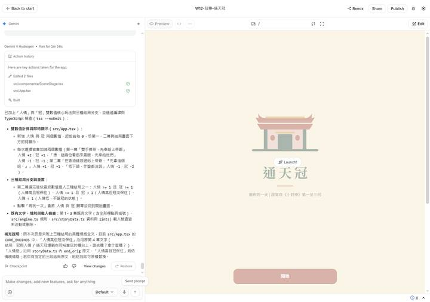
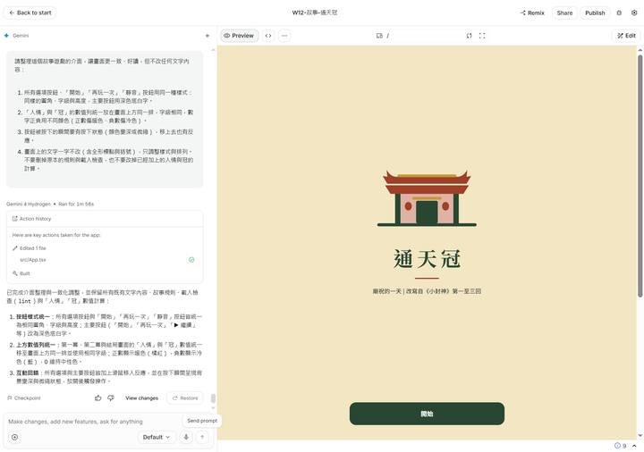
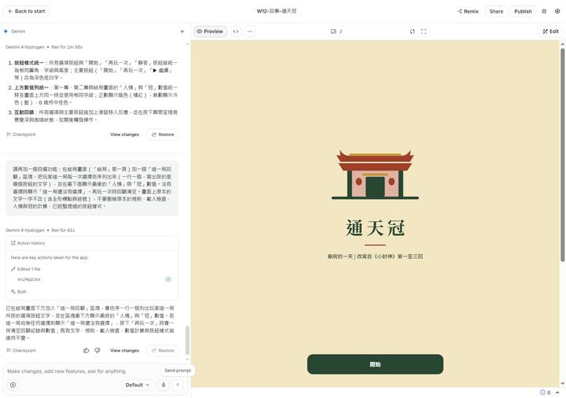
請用 Figma 連接器，新建一份 Figma 檔，檔名「W12-故事-通天冠」，在裡面畫 3 個手機直式遊戲畫面（每個 390×844），畫面名稱依序是「1 開始」「2 第一幕 颱風過後」「3 結局 冠與人情」。 這是一個「故事」類遊戲（讀一段劇情、做選擇、走向不同結局），名字叫《通天冠》，副標「廟祝的一天｜改寫自《小封神》第一至三回」。你只畫畫面，不要改文字，文字照下面一字不差放進去： 【畫面 1 開始】大標題「通天冠」；副標「廟祝的一天｜改寫自《小封神》第一至三回」；一顆主要按鈕「開始」。 【畫面 2 第一幕 颱風過後】頂端標題「第一幕 颱風過後」；中間是一個對話框，內容三段：「七月三日夜，颱風把小廟吹倒了。天亮之後，廟埕只剩一堆歪掉的樑柱。」「你是這座小廟的廟祝。你全部的家當，只剩一壺清茶。」「站在底下的人才知道餓，坐在上面的人哪裡曉得。」（說話的人是趙元帥）；最上方一排資源列：「面子 3」「人情 0」；底部兩個選項按鈕：「雙手捧茶，先奉給上帝爺」「康、趙兩位看起來最餓，先奉給他們」；選項上方一行小字提示「長輩說：先奉長輩。（各家習慣不同，這裡是簡化）」。 【畫面 3 結局 冠與人情】標題「結局 冠與人情」；結局標籤「改寫的路」；一段文字「通天冠還躺在同裕當店的櫃台上。誰去贖？拿什麼贖？」；底部一顆按鈕「再玩一次」。 畫風：廟埕的暖色調（米黃、磚紅、墨綠），人物只用簡單色塊與名牌（不要畫神像、不要畫臉），所有按鈕一個大小一致、圓角相同。畫完請列出：①檔案連結 ②三個畫面的名稱與節點 ID ③你用了哪些顏色（色碼）。 （等 Claude 畫完，再貼下面這一段，補第 4、5 個畫面與流程圖） 請在同一個檔案、同一個 page（不要新增 page）繼續，不用改檔名： ①再畫 1 個畫面（390×844，風格跟前面一致），放在「2 第一幕 颱風過後」和「3 結局 冠與人情」之間，並把畫面編號順延： 「3 第二幕 銅鍍金的通天冠」：頂端標題「第二幕 銅鍍金的通天冠」；資源列「面子 3」「人情 0」；對話框：「看來世上金能語。」（上帝爺說）「他慢慢摘下頭上那頂銅鍍金的通天冠。沒了冠，頭髮披散下來，他也顧不得了。」「你摸摸袖子裡的錢袋——那是廟裡這陣子收到的香油錢，不多。」；底部兩個選項按鈕：「把香油錢袋遞給上帝爺：「先拿這個吧。」」「低下頭，什麼都沒說」。原本的結局畫面改名為「4 結局 冠與人情」。 ②在畫面下方畫「畫面流程圖」：方框＝畫面，箭頭標「點哪裡」：1 開始→2 第一幕（點「開始」）、2 第一幕→3 第二幕（點「雙手捧茶，先奉給上帝爺」）、3 第二幕→4 結局（點「把香油錢袋遞給上帝爺」）、4 結局→1 開始（點「再玩一次」）。 ③畫面框外放一個文字框，標題「Claude 協作日誌」，先補記三行，格式「日期時間｜我請你做的事｜你改了什麼」：畫 3 個畫面／補第二幕與流程圖／（檔名我自己改）。之後我每請你改一次，你都在這個文字框最下面追加一行同樣格式。 改完請回覆：檔案連結、所有畫面名稱與節點 ID、這個檔有幾個 page。
請先不要改程式。看附圖（4 個手機畫面和 1 張畫面流程圖），列出： ①每個畫面的名稱 ②每個畫面上的按鈕和可以點的地方（寫出按鈕上的字） ③畫面之間的跳接：點哪裡 → 去哪個畫面 （等它復述完，你對照 Figma 說「對」之後，再貼下面這一段） 照圖做出可以點的版本：4 個畫面都要做，流程圖上所有跳接都要能點（兩個選項按鈕都要能跳到下一個畫面），畫面上的文字一字不改（照圖上的字）。不要刪掉原本的規則與載入檢查。
請幫這個「通天冠」故事遊戲加上核心玩法，讓玩家的選擇真的會影響結局： 1. 每一次重要選擇（例如第一幕對康、趙兩位元帥的回應，以及第二幕是否把冠交給當店）都會加減兩個數值：「人情」與「冠」，各從 0 開始。 2. 選項按鈕要照這些選擇計算數值，並在畫面下方即時顯示目前的「人情」與「冠」。 3. 結局畫面依最後的數值顯示三種結局之一：人情高且冠保住、人情高但冠沒保住、人情低（不論冠的狀態）。結局文字依規格照原樣使用，不要改寫。 4. 按「再玩一次」要把兩個數值歸零，回到開始畫面。 5. 畫面上原本的文字一字不改（含全形標點與括號），只新增數值與選擇後的計算；不要刪掉原本的規則與載入檢查。
請整理這個故事遊戲的介面，讓畫面更一致、好讀，但不改任何文字內容： 1. 所有選項按鈕、「開始」「再玩一次」「靜音」按鈕用同一種樣式：同樣的圓角、字級與高度，主要按鈕用深色底白字。 2. 「人情」與「冠」的數值列統一放在畫面上方同一排，字級相同，數字正負用不同顏色（正數偏暖色、負數偏冷色）。 3. 按鈕被按下的瞬間要有按下狀態（顏色變深或微縮），移上去也有反應。 4. 畫面上的文字一字不改（含全形標點與括號），只調整樣式與排列。不要刪掉原本的規則與載入檢查，也不要改掉已經加上的人情與冠的計算。
請再加一個自選功能：在結局畫面（「結局」那一頁）加一個「這一局回顧」區塊，把玩家這一局每一次選擇依序列出來（一行一個，寫出按的是哪個按鈕的文字），並在最下面顯示最後的「人情」與「冠」數值。沒有選擇時顯示「這一局還沒有選擇」。再玩一次時回顧清空。畫面上原本的文字一字不改（含全形標點與括號），不要刪掉原本的規則、載入檢查、人情與冠的計算、已經整理過的按鈕樣式。
打開範例 Figma 打開範例 AI StudioBuka contoh Figma Buka contoh AI Studio
製作中，課前補上。Sedang dibuat, akan dilengkapi sebelum kelas dimulai.
老師實測：可點版本 5 個畫面的跳接都點得通，改 3 最終版的畫面文字和 Figma「現場」畫面逐字相同（9 句全中）；改 1、改 2 的文字對照沒有逐一另做；沒有錄互動影片。AI Studio 專案名稱目前還是 AI 自己取的，不用管。Uji coba dosen: Transisi di antara 5 layar pada versi yang bisa diklik semuanya berfungsi dengan baik. Teks layar pada versi final Revisi 3 sama persis kata demi kata dengan layar 「現場」(lokasi) di Figma (semua 9 kalimat cocok). Pemadanan teks untuk Revisi 1 dan Revisi 2 tidak dibuat terpisah satu per satu; video interaktif belum direkam. Nama proyek AI Studio saat ini masih nama bawaan yang dibuat oleh AI, abaikan saja dulu.
看 76 秒說明片：解謎範例從畫到改走一遍Tonton video penjelasan 76 detik: lihat seluruh proses contoh teka-teki, mulai dari menggambar sampai mengedit
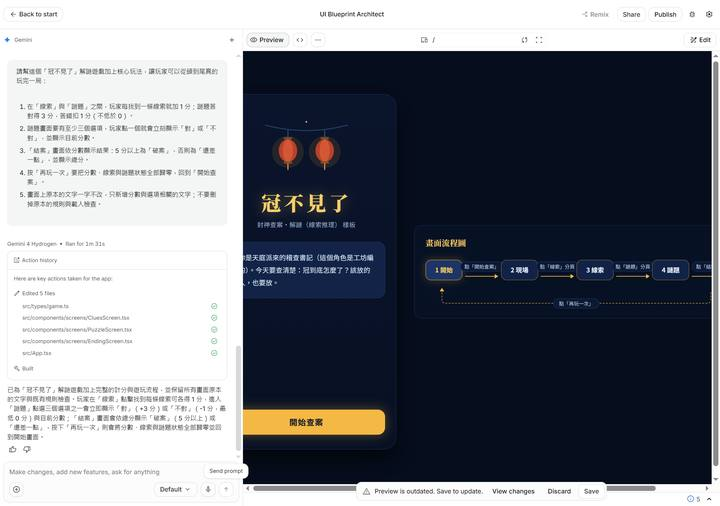
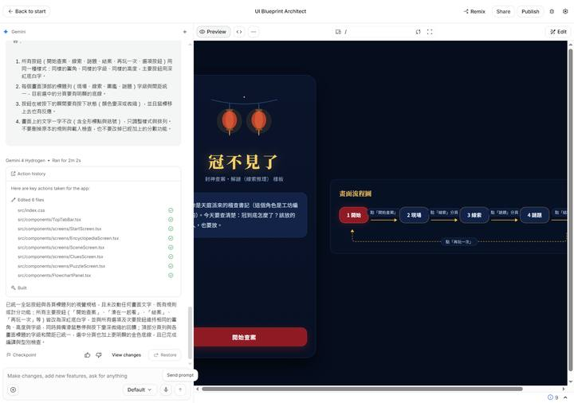
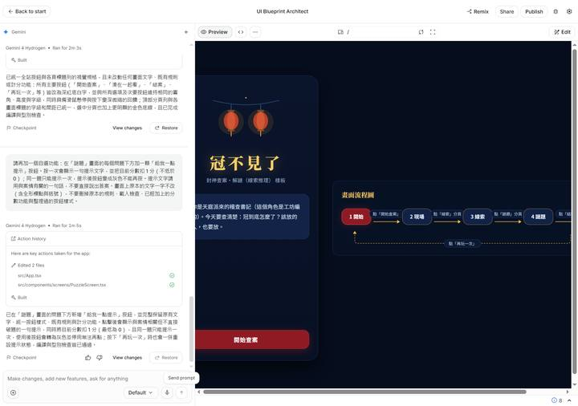
請用 Figma 連接器，新建一份 Figma 檔，檔名「W12-解謎-冠不見了」，在裡面畫 3 個手機直式遊戲畫面（每個 390×844），畫面名稱依序是「1 開始」「2 現場 小上帝廟前」「3 線索 湊在一起」。 這是一個「解謎」類遊戲（到現場找東西、把兩樣東西湊在一起看線索），名字叫《冠不見了》。你只畫畫面，不要改文字，文字照下面一字不差放進去： 【畫面 1 開始】大標題「冠不見了」；副標「封神查案・解謎（線索推理）樣板」；一段文字「你是天庭派來的稽查書記（這個角色是工坊編的）。今天要查清楚：冠到底怎麼了？該放的人，也要放。」；一顆主要按鈕「開始查案」。 【畫面 2 現場 小上帝廟前】頂端分頁列四個分頁：「現場」「線索」「圖鑑」「謎題」，選中「現場」；地點名「小上帝廟前」；一段文字「一間簡陋的廟，三分不像寺、四分不像宮。康元帥和趙元帥站在門口，肚子叫得很大聲。」；一個可點的項目按鈕「聽康、趙兩位元帥怎麼說」。 【畫面 3 線索 湊在一起】選中「線索」分頁；兩個物品格「朱筆」（筆尖還是紅的，掉在樹根旁。）、「墨斗」（木頭做的，線還繞在裡面。）；中間一顆按鈕「湊在一起看」；下方一個空的結果框。 畫風：夜間查案的深藍與燈籠黃。所有按鈕大小一致、圓角相同；不要畫真實神像和人臉，人物用色塊與名牌。 畫完請列出：①檔案連結 ②每個畫面的名稱與節點 ID ③你用了哪些顏色（色碼）。 （等 Claude 畫完，再貼下面這一段，補第 4、5 個畫面與流程圖） 請在同一個檔案、同一個 page（不要新增 page）繼續做這幾件事： ①檔名改成「文化-解謎-冠不見了」。 ②再畫 2 個畫面，尺寸一樣 390×844，風格跟前面一致： 「4 謎題」：分頁列選中「謎題」；標題「吊在樹上的人是誰？」；一段文字「康趙說搶冠的是「獠牙大漢千里眼」，小上帝就把榕樹上這個人吊起來示眾。他真的是千里眼嗎？先選他是誰，再選你憑什麼這樣認。」；底部一顆按鈕「結案」。 「5 結案」：標題「案情說明」；一段文字「冠沒有被搶。小上帝窮得沒飯吃，叫康、趙二帥把銅鍍金的通天冠拿到打銀街的同裕當店，當了五千錢。」；底部一顆按鈕「再玩一次」。 ③在畫面下方畫一張「畫面流程圖」：方框＝畫面，箭頭上標「點哪裡」：1 開始→2 現場（點「開始查案」）、2 現場→3 線索（點「線索」分頁）、3 線索→4 謎題（點「謎題」分頁）、4 謎題→5 結案（點「結案」）、5 結案→1 開始（點「再玩一次」）。 ④在畫面框外放一個文字框，標題「Claude 協作日誌」，先補記三行，每行格式「日期時間｜我請你做的事｜你改了什麼」：畫 3 個畫面／補 2 個畫面與流程圖／改檔名。之後我每請你改一次，你都要在這個文字框最下面追加一行同樣格式。 改完請回覆：檔案連結、所有畫面名稱與節點 ID、這個檔有幾個 page。
請先不要寫程式。看附圖（5 個手機畫面和 1 張畫面流程圖），列出： ①每個畫面的名稱 ②每個畫面上的按鈕和可以點的地方（寫出按鈕上的字） ③畫面之間的跳接：點哪裡 → 去哪個畫面 （等它復述完，你對照 Figma 說「對」之後，再貼下面這一段） 照圖做出可以點的版本：5 個畫面都要做，流程圖上所有跳接都要能點（開始查案、線索分頁、謎題分頁、結案、再玩一次），畫面上的文字一字不改（照圖上的字）。不要刪掉原本的規則與載入檢查。
請幫這個「冠不見了」解謎遊戲加上核心玩法，讓玩家可以從頭到尾真的玩完一局： 1. 在「線索」與「謎題」之間，玩家每找到一條線索就加 1 分；謎題答對得 3 分，答錯扣 1 分（不低於 0）。 2. 謎題畫面要有至少三個選項，玩家點一個就會立刻顯示「對」或「不對」，並顯示目前分數。 3. 「結案」畫面依分數顯示結果：5 分以上為「破案」，否則為「還差一點」，並顯示總分。 4. 按「再玩一次」要把分數、線索與謎題狀態全部歸零，回到「開始查案」。 5. 畫面上原本的文字一字不改，只新增分數與選項相關的文字；不要刪掉原本的規則與載入檢查。
請整理這個解謎遊戲的介面，讓畫面更一致、好讀，但不改任何文字內容： 1. 所有按鈕（開始查案、線索、謎題、結案、再玩一次、選項按鈕）用同一種樣式：同樣的圓角、同樣的字級、同樣的高度，主要按鈕用深紅底白字。 2. 每個畫面頂部的標題列（現場、線索、圖鑑、謎題）字級與間距統一，目前選中的分頁要有明顯的底線。 3. 按鈕在被按下的瞬間要有按下狀態（顏色變深或微縮），並且鼠標移上去也有反應。 4. 畫面上的文字一字不改（含全形標點與括號），只調整樣式與排列。不要刪掉原本的規則與載入檢查，也不要改掉已經加上的分數功能。
請再加一個自選功能：在「謎題」畫面的每個問題下方加一顆「給我一點提示」按鈕。按一次會顯示一句提示文字，並把目前分數扣 1 分（不低於 0）；同一題只能提示一次，提示後按鈕變成灰色不能再按。提示文字請用與案情有關的一句話，不要直接說出答案。畫面上原本的文字一字不改（含全形標點與括號），不要刪掉原本的規則、載入檢查、已經加上的分數功能與整理過的按鈕樣式。
打開範例 Figma 打開範例 AI StudioBuka contoh Figma Buka contoh AI Studio
老師實測：可點版本和「食材不夠」那一步沒有乾淨的預覽截圖（預覽被 AI Studio 的條款視窗擋住，老師沒有代替你按同意），所以只放兩張圖；改 1 的三個檢查是在後面的版本上做的；第一次送復述時不小心混進別人的草稿，已補送更正。Uji coba dosen: versi yang dapat diklik dan langkah "bahan tidak cukup" tidak memiliki tangkapan layar pratinjau yang bersih (pratinjau tertutup oleh jendela persyaratan AI Studio, dan dosen tidak menekan setuju atas nama kamu), jadi hanya menampilkan dua gambar; tiga pemeriksaan pada Revisi 1 dilakukan pada versi setelahnya; saat pertama kali mengirim instruksi pengulangan tidak sengaja tercampur draf orang lain, koreksi sudah dikirimkan ulang.
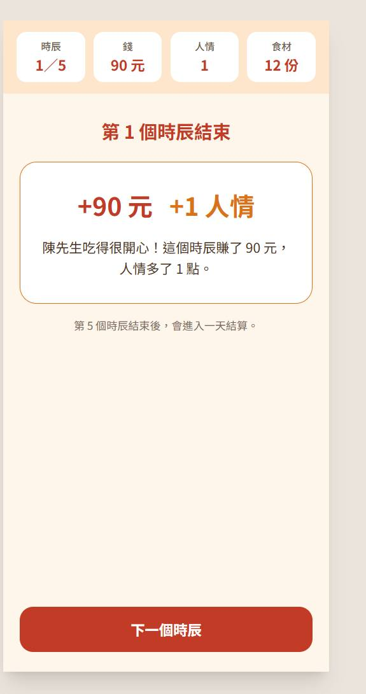
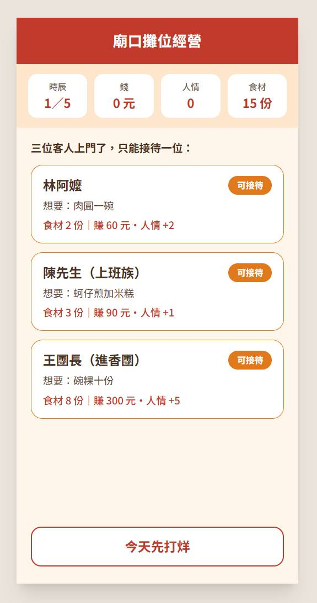
請用 Figma 連接器，新建一個 Figma 設計檔，檔名叫「文化-經營-廟口攤位經營」，放在我的草稿（Drafts）。重要：整個檔案只用一個 page（就叫「廟口攤位經營」），所有畫面和流程圖都畫在這同一個 page，不要新增第二個 page。 我要做一個手機小遊戲「廟口攤位經營」：玩家是廟口小吃攤老闆，一天有 5 個時辰，每個時辰有三位客人上門，只能接待一位；食材不夠的客人不能接待；5 個時辰結束後看今天賺多少錢、累積多少人情。 請畫 5 個前後銜接的手機畫面，每個畫面寬 390、高 780，由左到右排成一排、間隔 60，每個畫面上方放畫面名稱（例如「① 開始」）： ① 開始：標題列（廟口攤位經營）、一句玩法說明、主要按鈕「開張」。 ② 主畫面：標題列、狀態列（第幾個時辰／5、錢、人情、食材存量）、三張客人選項卡片（客人名字、想要什麼、要用幾份食材、能賺多少）、食材不夠的卡片要用灰色並寫「食材不夠」、底部次要按鈕「今天先打烊」。 ③ 接待確認：標題列、被選中客人的大卡片、這次會花多少食材與賺多少的說明、主要按鈕「接待」、次要按鈕「換一位」。 ④ 時辰結果：狀態列、這一個時辰的結果句（賺了多少錢、多了多少人情）、主要按鈕「下一個時辰」。 ⑤ 一天結算：標題列、結果畫面（今天賺多少錢、累積多少人情、一句結語）、主要按鈕「再玩一天」、次要按鈕「回到開始」。 畫面要有這些常見介面元件：標題列、主要按鈕（實心）、次要按鈕（外框）、選項卡片、狀態列／分數、結果畫面。配色用暖色（紅、橙、米白），文字一律繁體中文，字級不要小於 14。 最後在五個畫面下方，用方框和箭頭畫一張「畫面流程圖」：每個方框是一個畫面名稱，箭頭旁標出「點哪個按鈕」（例如 ①→②：點「開張」；②→③：點客人卡片；③→④：點「接待」；③→②：點「換一位」；④→②：點「下一個時辰」；④→⑤：第 5 個時辰結束後；⑤→②：點「再玩一天」；⑤→①：點「回到開始」；②→⑤：點「今天先打烊」）。流程圖也畫在同一個 page。 畫完後告訴我檔案網址，並列出每個畫面的名稱與裡面的所有文字。 另外，在畫面框外新增一個文字框，標題叫「Claude 協作日誌」。畫完後在日誌最下面追加一行：日期時間｜我請你做的事｜你改了什麼。
我是設計系學生，附圖是我的手機小遊戲「廟口攤位經營」的 5 個畫面和一張畫面流程圖。請先不要寫任何程式，只用文字回答： 1. 列出每個畫面的名稱，以及畫面上所有的按鈕和卡片。 2. 說明每個按鈕或卡片按下去會跳到哪個畫面（照流程圖）。 3. 圖上有哪些字你看不清楚或不確定？ 這個專案請命名為「文化-經營-廟口攤位經營」，後面我會在同一個專案接著請你修改，請不要另外開新的。 （等它復述完，你對照 Figma 說「對」之後，再貼下面這一段） 照剛剛附的圖，把「廟口攤位經營」做成可以點的手機網頁（純前端、寬度 390 並在電腦上置中、不要呼叫任何 AI）：5 個畫面全部做出來，畫面文字照圖一個字都不要改，按鈕和卡片依流程圖跳接（開張→主畫面、點客人卡片→接待確認、接待→時辰結果、換一位→主畫面、下一個時辰→主畫面、今天先打烊→一天結算、再玩一天→主畫面、回到開始→開始）。這一步先照圖還原，數字都先用圖上的。請沿用現在這個專案接著改，不要另外開新的。畫面上的文字照圖一個字都不要改（全形括號、標點照原樣）。
加一個功能：計分與狀態會真的變化。接待一位客人後，狀態列的錢、人情、食材照那位客人卡片上的數字增減，時辰加 1；時辰結果畫面顯示這次賺的錢和人情；第 5 個時辰結束後，下一步改成進入一天結算，結算畫面顯示今天累積的錢和人情。請沿用現在這個專案接著改，不要另外開新的。畫面上的文字照圖一個字都不要改（全形括號、標點照原樣）。
整理介面，讓它跟我的 Figma 畫面一樣：標題列紅色 #C0392B、白色粗體 20 字；主要按鈕實心紅 #C0392B、白色粗體 18 字、高 55、圓角 14；次要按鈕白底、2 像素紅框、圓角 14；客人卡片白底、1.5 像素橘框 #E0781C、圓角 16；所有按鈕按下去時顏色變深一點。畫面文字和功能都不要改。請沿用現在這個專案接著改，不要另外開新的。
加一個功能：食材不夠的客人不能接待。主畫面上食材不夠的客人卡片要變灰，點它不會跳畫面，只在卡片下方出現一行紅字「食材不夠，換一位」；每張卡片按下去時有按下的樣子（顏色變深）。請沿用現在這個專案接著改，不要另外開新的。畫面上的文字照圖一個字都不要改（全形括號、標點照原樣）。
打開範例 Figma 打開範例 AI StudioBuka contoh Figma Buka contoh AI Studio
老師實測：專案裡老師另外多做了兩則（點選配對、完成畫面＋洗牌），內容和改 1、改 3 有重複；可點版本沒有乾淨的截圖（被條款視窗擋住）；「放錯了，卡片彈回去」那行字老師沒觀察到；Figma 的「總共嘗試 6 次」已請 Claude 改成實測的 4 次。Uji coba dosen: Di dalam proyek, dosen menambahkan dua bagian lagi (klik untuk mencocokkan, layar selesai + kocok kartu), isinya bertumpukan dengan Revisi 1 dan Revisi 3; versi yang bisa diklik tidak memiliki tangkapan layar yang bersih (terhalang jendela ketentuan); kalimat "放錯了，卡片彈回去" (Salah tempat, kartu membal kembali) tidak terlihat oleh dosen; tulisan "總共嘗試 6 次" (Total mencoba 6 kali) di Figma sudah diminta ke Claude untuk diubah menjadi 4 kali sesuai hasil uji coba nyata.
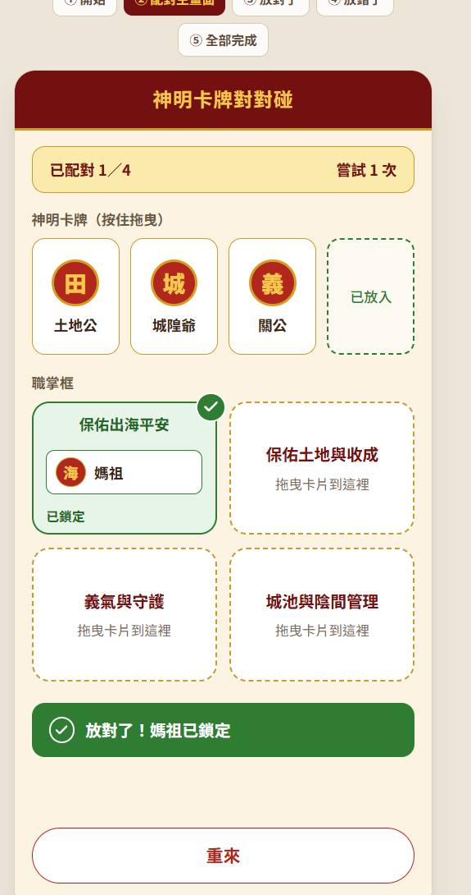
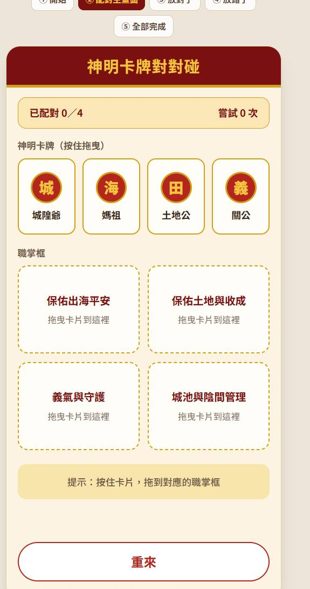
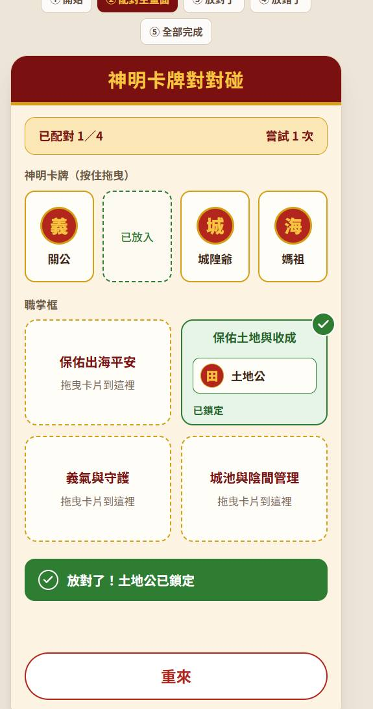
請用 Figma 連接器，新建一個 Figma 設計檔，檔名叫「文化-卡牌-神明卡牌對對碰」，放在我的草稿（Drafts）。重要：整個檔案只用一個 page（就叫「神明卡牌對對碰」），所有畫面和流程圖都畫在這同一個 page，不要新增第二個 page。 我要做一個手機小遊戲「神明卡牌對對碰」：把 4 張神明卡（媽祖、土地公、關公、城隍爺）拖到祂的職掌框上，放對了打勾鎖定，放錯了卡片彈回去；全部配對成功時顯示總共嘗試幾次。 請畫 5 個前後銜接的手機畫面，每個畫面寬 390、高 780，由左到右排成一排、間隔 60，每個畫面上方放畫面名稱（例如「① 開始」）： ① 開始：標題列（神明卡牌對對碰）、一句玩法說明、主要按鈕「開始配對」。 ② 配對主畫面：標題列、狀態列（已配對 0／4、嘗試 0 次）、上方 4 張神明卡牌（卡面有神明名字和一個簡單圖示）、下方 4 個職掌框（保佑出海平安、保佑土地與收成、義氣與守護、城池與陰間管理）、底部次要按鈕「重來」。 ③ 放對了：同主畫面，但其中一張卡已放進正確的職掌框，框上有綠色勾勾並標示「已鎖定」，狀態列更新為「已配對 1／4、嘗試 2 次」。 ④ 放錯了：同主畫面，一張卡被放到錯的框，框變紅色、出現提示「放錯了，卡片彈回去」，狀態列嘗試次數加 1。 ⑤ 全部完成：標題列、結果畫面（4 張卡都鎖定的小縮圖、「全部配對成功！總共嘗試 N 次」）、主要按鈕「再玩一次」、次要按鈕「回到開始」。 畫面要有這些常見介面元件：標題列、主要按鈕（實心）、次要按鈕（外框）、選項卡片、狀態列／分數、結果畫面。配色用紅金色系，文字一律繁體中文，字級不要小於 14。 最後在五個畫面下方，用方框和箭頭畫一張「畫面流程圖」：每個方框是一個畫面名稱，箭頭旁標出「點哪裡或做什麼」（例如 ①→②：點「開始配對」；②→③：把卡拖到正確的框；②→④：把卡拖到錯的框；④→②：卡片彈回；③→②：繼續配下一張；③→⑤：第 4 張也配對成功；⑤→②：點「再玩一次」；⑤→①：點「回到開始」；②→②：點「重來」）。流程圖也畫在同一個 page。 畫完後告訴我檔案網址，並列出每個畫面的名稱與裡面的所有文字。 另外，在畫面框外新增一個文字框，標題叫「Claude 協作日誌」。畫完後在日誌最下面追加一行：日期時間｜我請你做的事｜你改了什麼。
我是設計系學生，附圖是我的手機小遊戲「神明卡牌對對碰」的 5 個畫面和一張畫面流程圖。請先不要寫任何程式，只用文字回答： 1. 列出每個畫面的名稱，以及畫面上所有的按鈕、卡片和框。 2. 說明每個動作（點按鈕、拖卡片到框）會跳到或變成哪個畫面（照流程圖）。 3. 圖上有哪些字你看不清楚或不確定？ 這個專案請命名為「文化-卡牌-神明卡牌對對碰」，後面我會在同一個專案接著請你修改，請不要另外開新的。 （等它復述完，你對照 Figma 說「對」之後，再貼下面這一段） 照剛剛附的圖，把「神明卡牌對對碰」做成可以點的手機網頁（純前端、寬度 390 並在電腦上置中、不要呼叫任何 AI）：5 個畫面全部做出來，畫面文字照圖一個字都不要改，按鈕依流程圖跳接（開始配對→配對主畫面、重來→配對主畫面歸零、再玩一次→配對主畫面、回到開始→開始）。這一步先照圖還原，配對畫面可以先用靜態示意，放對、放錯、完成三個畫面可以先用按鈕切換看。請沿用現在這個專案接著改，不要另外開新的。畫面上的文字照圖一個字都不要改（全形括號、標點照原樣）。
加一個功能：真的可以拖。把神明卡拖到職掌框上（媽祖→保佑出海平安、土地公→保佑土地與收成、關公→義氣與守護、城隍爺→城池與陰間管理），放對了打勾鎖定、卡片留在框裡，放錯了卡片彈回原位；狀態列的「已配對」和「嘗試」次數要跟著變。請沿用現在這個專案接著改，不要另外開新的。畫面上的文字照圖一個字都不要改（全形括號、標點照原樣）。 （下一則） 讓遊戲從頭玩到尾：4 張都配對成功時，自動進入「全部完成」畫面，顯示「全部配對成功！總共嘗試 N 次」（N 是真的嘗試次數）；「再玩一次」和「重來」都要把所有卡片放回原位、已配對和嘗試次數歸零。畫面文字照圖不要改。請沿用現在這個專案接著改，不要另外開新的。
整理介面，讓它跟我的 Figma 畫面一樣：標題列深紅 #7A1010、下方 4 像素金邊 #D4A017、標題字金黃 #F5C542 粗體 22；主要按鈕深紅 #B3261E 實心、圓角 28、高 56、字米色粗體 18；次要按鈕白底 2 像素 #B3261E 框、圓角 28；神明卡牌米白 #FFFDF7、2 像素金框、圓角 12；職掌框金色虛線框、圓角 14；狀態列淡黃 #FBE7B5 底、金框、圓角 12；所有按鈕按下去時顏色變深一點。畫面文字和功能都不要改。請沿用現在這個專案接著改，不要另外開新的。
加一個功能：手機也要能用。除了拖曳，也能「先點卡片、再點職掌框」配對；被點選的卡片外框變色；放錯時顯示「放錯了，卡片彈回去」，放對時顯示「放對了！○○已鎖定」；每次重來卡片順序重新洗牌。畫面文字照圖不要改。請沿用現在這個專案接著改，不要另外開新的。
打開範例 Figma 打開範例 AI StudioBuka contoh Figma Buka contoh AI Studio
製作中，課前補上。Sedang dibuat, akan dilengkapi sebelum kelas dimulai.
老師實測：照這份指令做完，改 2 的顏色是 AI 看圖估的近似色，方向和 Figma 一致（深藍底、紅按鈕、按下變深縮小），但不是一模一樣。老師實際送出的順序是改 1、改 3、改 2，三種都做了。Uji coba dosen: Setelah selesai mengikuti instruksi ini, warna pada Revisi 2 adalah perkiraan AI dari melihat gambar, arah warnanya konsisten dengan Figma (latar biru tua, tombol merah, saat ditekan menjadi lebih gelap dan mengecil), tetapi tidak sama persis. Urutan pengiriman yang dosen lakukan sebenarnya adalah Revisi 1, Revisi 3, lalu Revisi 2, ketiganya sudah dicoba.
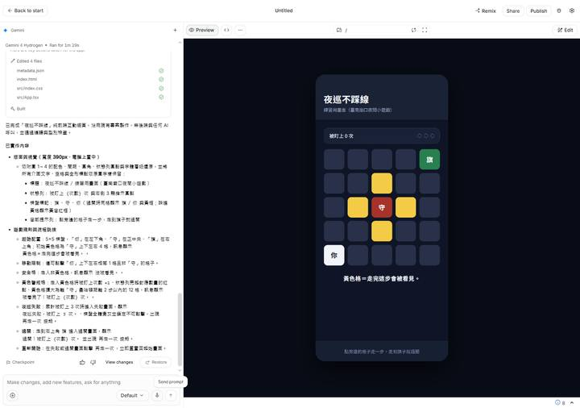
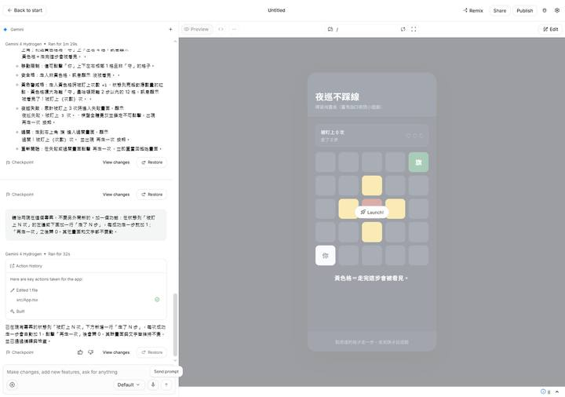
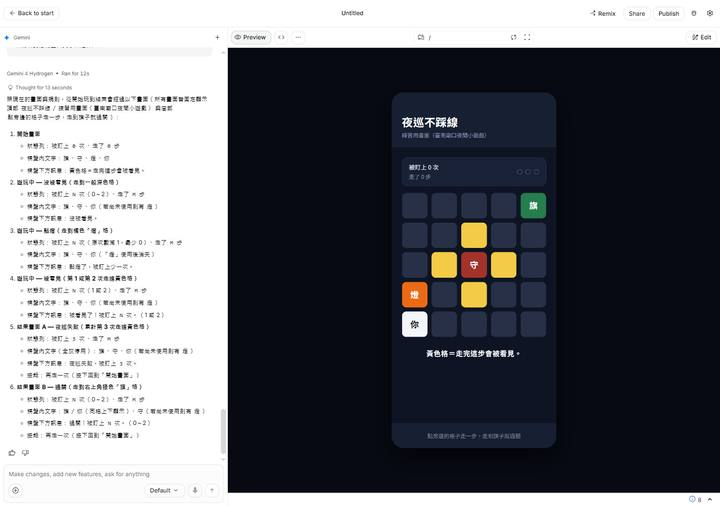
我是設計系學生，想為一個叫「夜巡不踩線」的臺南廟口夜間小遊戲先畫好手機畫面。請你用 Figma 連接器新建一個檔案，檔名叫「文化-潛行-夜巡不踩線」（請不要新增任何記憶）。 玩法：5×5 的格子，我從左下角出發，要走到右上角的旗子；中間有一位守望者「守」，黃色格代表「走完這一步會被看見」；被看見會累積「被盯上」次數，被盯上越多、守望者看得越遠，被盯上 3 次就失敗。 請在檔案裡用 Frame 畫 4 個前後銜接的手機畫面，寬 390、由左到右排好，每個畫面上方放小標籤（畫面1…畫面4）： 畫面1「開始」：標題「夜巡不踩線」；副標「練習用畫面（臺南廟口夜間小遊戲）」；「被盯上 0 次」；5×5 格子，左下角格寫「你」、正中央格寫「守」、右上角格寫「旗」，「守」上下左右 4 格塗黃色；格子下方一行「黃色格＝走完這步會被看見。」；最下面一行「點旁邊的格子走一步，走到旗子就過關」。 畫面2「被看見」：同樣的版面；「被盯上 1 次」；「你」走到「守」旁邊的黃色格；黃色格擴大成「守」周圍兩圈；格子下方訊息改成「被看見了！被盯上 1 次。」。 畫面3「夜巡失敗」：同樣的版面；「被盯上 3 次」；訊息「夜巡失敗，被盯上 3 次。」；格子變灰；格子下方多一顆按鈕「再走一次」。 畫面4「過關」：同樣的版面；「被盯上 0 次」；「你」站在右上角旗子格；訊息「過關！被盯上 0 次。」；格子下方一顆按鈕「再走一次」。 文字請照我寫的，一個字都不要改，字級不要小於 14。 畫面都畫完後，請在這 4 個畫面下方再畫一張「畫面流程圖」：每個畫面縮小成一個方框（寫畫面名稱），用箭頭連起來，箭頭旁邊寫「要點哪裡」： 畫面1→畫面2：點黃色格；畫面2→畫面3：再被看見到第 3 次；畫面1→畫面4：沿著沒被看見的路走到旗子；畫面3→畫面1：按「再走一次」；畫面4→畫面1：按「再走一次」。 檔案請只用一個 page：全部畫面和流程圖都畫在同一個 page 裡，不要新增其他 page（我用的是 Figma 免費版，一個檔最多 3 個 page）。畫面要包含常見的介面元件：最上面的標題列、主要按鈕、可以點選的選項卡片或格子、顯示分數或狀態的一行、結果訊息；元件請用 Frame 和 Auto layout 排好、命名清楚（例如「標題列」「主按鈕」「狀態列」），方便我照著畫。 畫完請把檔案連結貼給我，並告訴我每個畫面的名稱。
我是設計系學生，這是我在 Figma 畫好的「夜巡不踩線」小遊戲：附圖是 4 個畫面（畫面1～畫面4）加一張「畫面流程圖」。請先不要寫任何程式，只用文字回答，分三段： 1. 畫面：逐個列出畫面1～畫面4 各叫什麼、畫面上每一段文字（照圖上的字抄，一個字都不要改）； 2. 按鈕與可以點的地方：列出每個畫面有哪些按鈕或可以點的東西； 3. 跳接：用「畫面A → 畫面B：點哪裡」的格式，把流程圖上的每一條箭頭復述一次。 看不清楚或看起來矛盾的地方請直接說出來，不要自己猜。 （等它復述完，你對照 Figma 說「對」之後，再貼下面這一段） 請沿用現在這個專案，不要另外開新的。照剛剛那 4 個畫面和流程圖，做成一個可以點的網頁：純前端單一網頁，不要後端、不要呼叫任何 AI，寬度 390px 並在電腦上置中，畫面上的文字照附圖一個字都不要改（全形標點、空格都照原樣）。 玩法：5×5 格子，「你」在左下角，「守」在正中央，「旗」在右上角；點「你」旁邊（上下左右）一格就走過去，點不相鄰的格子或「守」不能走。「守」上下左右 4 格是黃色格；走進黃色格就被看見：被盯上 +1，狀態列的圓點亮一顆，黃色格擴大成離「守」上下左右走 2 步以內的 12 格，訊息變「被看見了！被盯上 1 次。」（次數照實際數字）；走到沒被看見的格子，訊息顯示「沒被看見。」；被盯上 3 次就進入「夜巡失敗」畫面（訊息「夜巡失敗，被盯上 3 次。」、格子變灰不能點、出現按鈕「再走一次」）；走到旗子進入「過關」畫面（訊息「過關！被盯上 0 次。」，次數照實際數字、出現按鈕「再走一次」）；按「再走一次」回到開始畫面。開始畫面的訊息放「黃色格＝走完這步會被看見。」，最下面的提示列放「點旁邊的格子走一步，走到旗子就過關」。
請沿用現在這個專案，不要另外開新的。加一個功能：在狀態列「被盯上 N 次」的左邊或下面加一行「走了 N 步」，每成功走一步就加 1；「再走一次」之後歸 0。其他畫面和文字都不要動。
請沿用現在這個專案，不要另外開新的。對照我一開始附的 Figma 畫面圖整理介面：標題列（高度、底色、標題和副標的字級與顏色）、按鈕（顏色、圓角、字級）、狀態列和卡片或格子的樣式、整體背景色，都統一成圖上的樣子；所有按鈕按下時要有按下狀態（顏色變深、縮小一點點）；停用的按鈕要看得出來是灰的。畫面上的文字和遊戲規則都不要動。改完請列出你對照圖改了哪幾處（至少兩處）。
請沿用現在這個專案，不要另外開新的。照遊戲原本的規則加一個新事件：在左下角「你」的正上方那格放一個「燈」；「你」走到「燈」那格時，被盯上次數減 1（最少 0），訊息顯示「點燈了，被盯上少一次。」，「燈」用過就消失，「再走一次」之後「燈」回來。「燈」格用橘色底。其他畫面和文字都不要動。
打開範例 Figma 打開範例 AI StudioBuka contoh Figma Buka contoh AI Studio
老師實測：改 2 的介面調整是 AI 自己回報的，老師沒有逐項對照 Figma 量過。改 3 做了「送出決定」按鈕：沒選任何一張卡就按，會出現紅字提醒。Uji coba dosen: Penyesuaian antarmuka pada Revisi 2 dilaporkan sendiri oleh AI, dosen tidak mengukurnya satu per satu dengan mencocokkan ke Figma. Revisi 3 membuat tombol 「送出決定」(Kirim keputusan): jika ditekan tanpa memilih kartu apa pun, akan muncul peringatan teks merah.
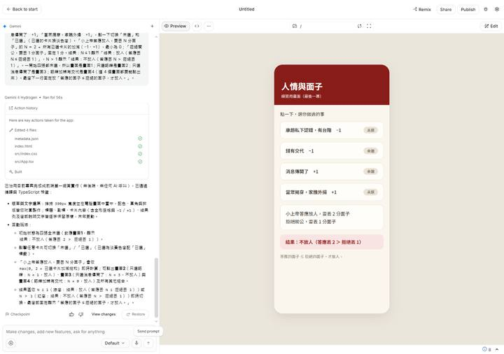
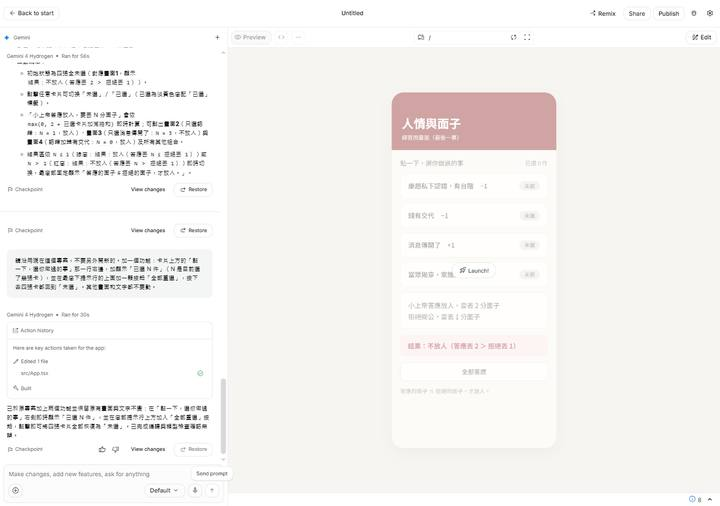
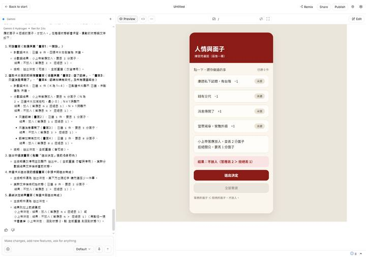
我是設計系學生，想為一個叫「人情與面子」的小遊戲先畫好手機畫面。請你用 Figma 連接器新建一個檔案，檔名叫「文化-談判-人情與面子」（請不要新增任何記憶）。 玩法：最後一幕，小上帝要不要放人，看「答應要丟多少面子」和「拒絕要丟多少面子」誰比較少。畫面上有 4 件我做過的事，點一下就「已選」，每件事會讓「答應要丟的面子」加或減；答應丟的面子小於等於拒絕丟的面子，就放人。 請在檔案裡用 Frame 畫 4 個前後銜接的手機畫面，寬 390、由左到右排好，每個畫面上方放小標籤（畫面1…畫面4）： 共同版面（由上到下）：標題「人情與面子」；副標「練習用畫面（最後一幕）」；一行說明「點一下，選你做過的事」；四張橫向的卡片，每張左邊是事件文字、右邊是「未選」或「已選」小標籤；卡片下方是算式區（兩行）；再下面一行結果；最底下一行「答應的面子 ≤ 拒絕的面子，才放人。」。 四張卡片的文字照順序是：「康趙私下認錯，有台階 −1」「錢有交代 −1」「消息傳開了 +1」「當眾揭穿，家醜外揚 +1」。 畫面1「一開始」：四張都是「未選」；算式兩行「小上帝答應放人，要丟 2 分面子」「拒絕關公，要丟 1 分面子」；結果「結果：不放人（答應丟 2 ＞ 拒絕丟 1）」。 畫面2「選了認錯」：第一張變「已選」（卡片換淡色底）；算式「小上帝答應放人，要丟 1 分面子」「拒絕關公，要丟 1 分面子」；結果「結果：放人（答應丟 1 ≤ 拒絕丟 1）」。 畫面3「只選消息傳開了」：只有第三張是「已選」；算式「小上帝答應放人，要丟 3 分面子」「拒絕關公，要丟 1 分面子」；結果「結果：不放人（答應丟 3 ＞ 拒絕丟 1）」。 畫面4「認錯加錢有交代」：第一、二張是「已選」；算式「小上帝答應放人，要丟 0 分面子」「拒絕關公，要丟 1 分面子」；結果「結果：放人（答應丟 0 ≤ 拒絕丟 1）」。 文字請照我寫的，一個字都不要改，字級不要小於 14。 畫面都畫完後，請在這 4 個畫面下方再畫一張「畫面流程圖」：每個畫面縮小成一個方框（寫畫面名稱），用箭頭連起來，箭頭旁邊寫「要點哪裡」： 畫面1→畫面2：點「康趙私下認錯，有台階」；畫面2→畫面1：再點一次同一張取消；畫面1→畫面3：只點「消息傳開了」；畫面2→畫面4：再點「錢有交代」；畫面3→畫面1：把它取消。 檔案請只用一個 page：全部畫面和流程圖都畫在同一個 page 裡，不要新增其他 page（我用的是 Figma 免費版，一個檔最多 3 個 page）。畫面要包含常見的介面元件：最上面的標題列、主要按鈕、可以點選的選項卡片或格子、顯示分數或狀態的一行、結果訊息；元件請用 Frame 和 Auto layout 排好、命名清楚（例如「標題列」「主按鈕」「狀態列」），方便我照著畫。 畫完請把檔案連結貼給我，並告訴我每個畫面的名稱。
我是設計系學生，這是我在 Figma 畫好的「人情與面子」小遊戲：附圖是 4 個畫面（畫面1～畫面4）加一張「畫面流程圖」。請先不要寫任何程式，只用文字回答，分三段： 1. 畫面：逐個列出畫面1～畫面4 各叫什麼、畫面上每一段文字（照圖上的字抄，一個字都不要改）； 2. 按鈕與可以點的地方：列出每個畫面有哪些按鈕或可以點的東西； 3. 跳接：用「畫面A → 畫面B：點哪裡」的格式，把流程圖上的每一條箭頭復述一次。 看不清楚或看起來矛盾的地方請直接說出來，不要自己猜。 （等它復述完，你對照 Figma 說「對」之後，再貼下面這一段） 請沿用現在這個專案，不要另外開新的。照剛剛那 4 個畫面和流程圖，做成一個可以點的網頁：純前端單一網頁，不要後端、不要呼叫任何 AI，寬度 390px 並在電腦上置中，畫面上的文字照附圖一個字都不要改（全形標點、全形空格、≤ ＞ 符號都照原樣）。 玩法：四張卡片「康趙私下認錯，有台階 −1」「錢有交代 −1」「消息傳開了 +1」「當眾揭穿，家醜外揚 +1」，點一下切換「未選」和「已選」（已選的卡片換淡色底）。「小上帝答應放人，要丟 N 分面子」的 N ＝ 2 ＋ 所有已選卡片的加減（−1、+1），最小為 0；「拒絕關公，要丟 1 分面子」固定 1 分。結果：N ≤ 1 顯示「結果：放人（答應丟 N ≤ 拒絕丟 1）」，N ＞ 1 顯示「結果：不放人（答應丟 N ＞ 拒絕丟 1）」。一開始四張都未選，所以畫面是畫面1；只選認錯是畫面2；只選消息傳開了是畫面3；認錯加錢有交代是畫面4（這 4 個畫面都要能點出來）。最底下一行固定放「答應的面子 ≤ 拒絕的面子，才放人。」。
請沿用現在這個專案，不要另外開新的。加一個功能：卡片上方的「點一下，選你做過的事」那一行右邊，加顯示「已選 N 件」（N 是目前選了幾張卡），並在最底下提示行的上面加一顆按鈕「全部重選」，按下去四張卡都回到「未選」。其他畫面和文字都不要動。
請沿用現在這個專案，不要另外開新的。對照我一開始附的 Figma 畫面圖整理介面：標題列（高度、底色、標題和副標的字級與顏色）、按鈕（顏色、圓角、字級）、狀態列和卡片或格子的樣式、整體背景色，都統一成圖上的樣子；所有按鈕按下時要有按下狀態（顏色變深、縮小一點點）；停用的按鈕要看得出來是灰的。畫面上的文字和遊戲規則都不要動。改完請列出你對照圖改了哪幾處（至少兩處）。
請沿用現在這個專案，不要另外開新的。加一顆大按鈕「送出決定」放在結果那一行的下面：按下去按鈕變灰並顯示「送出中…」約 0.8 秒；如果一張卡都沒選，就改顯示紅字「請先選至少一件事」，按鈕恢復可以再按；有選的話，結果那一行前面加上「小上帝決定：」，也就是變成「小上帝決定：結果：放人（…）」或「小上帝決定：結果：不放人（…）」。再點任何一張卡，「小上帝決定：」就拿掉。其他文字都不要動。
打開範例 Figma 打開範例 AI StudioBuka contoh Figma Buka contoh AI Studio
老師實測：Figma 結果畫面寫的數字（供品 0、街角等著 0 位）和規則算出來的不一樣（實際是供品 3、等著 5 位），這是老師畫圖時的疏漏，沒有叫 AI 改規則去配合。改 3 的「供品用完了」訊息老師沒測到。改 2 老師沒有逐項對照 Figma 量過。Uji coba dosen: Angka yang tertulis di layar kartu hasil Figma (sesajen 0, menunggu di sudut jalan 0 orang) berbeda dengan hasil perhitungan aturan (sebenarnya sesajen 3, menunggu 5 orang). Ini kekeliruan dosen saat menggambar, dan dosen tidak meminta AI mengubah aturan untuk menyesuaikannya. Pesan revisi 3 berupa "sesajen sudah habis" belum sempat diuji dosen. Revisi 2 juga belum diukur dan dicocokkan satu per satu dengan Figma oleh dosen.
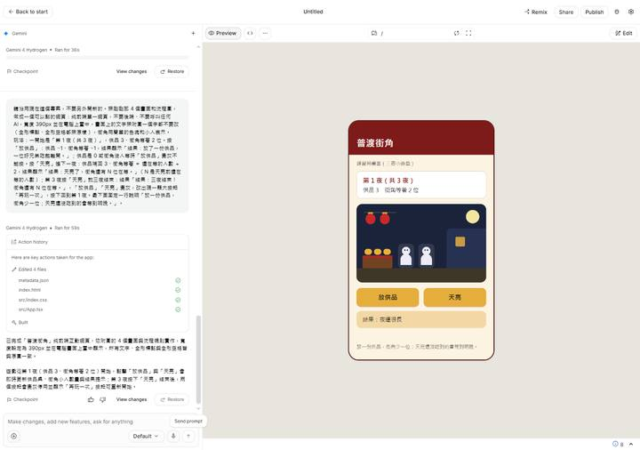
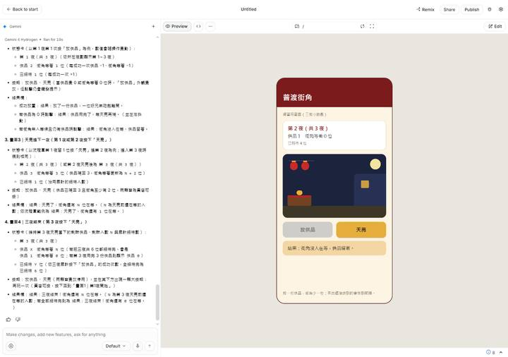
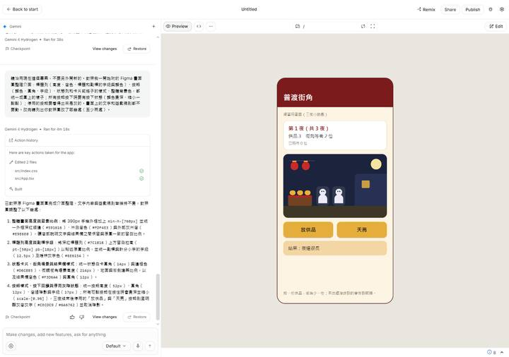
我是設計系學生，想為一個叫「普渡街角」的三夜小遊戲先畫好手機畫面。請你用 Figma 連接器新建一個檔案，檔名叫「文化-塔防-普渡街角」（請不要新增任何記憶）。 玩法：每一夜街角有幾位好兄弟在等，我手上有幾份供品；按「放供品」，供品少一份、街角少一位；天亮按「天亮」進到下一夜，供品會補回來、街角又來新的人；三夜結束看街角還剩幾位在等。 請在檔案裡用 Frame 畫 4 個前後銜接的手機畫面，寬 390、由左到右排好，每個畫面上方放小標籤（畫面1…畫面4）： 共同版面（由上到下）：標題「普渡街角」；副標「練習用畫面（三夜小遊戲）」；夜數一行；資源一行；中間一塊街角插圖區（用簡單色塊和小人表示，等著的人用小圖示一個一個排）；兩顆並排的大按鈕「放供品」「天亮」；結果一行；最底下一行說明「放一份供品，街角少一位；天亮還沒吃到的會等到明晚。」。 畫面1「第1夜開始」：「第 1 夜（共 3 夜）」；「供品 3 街角等著 2 位」；街角畫 2 位；結果「結果：夜還很長」。 畫面2「放了供品」：「第 1 夜（共 3 夜）」；「供品 2 街角等著 1 位」；街角畫 1 位；結果「結果：放了一份供品，一位好兄弟吃飽離開。」。 畫面3「天亮進第2夜」：「第 2 夜（共 3 夜）」；「供品 3 街角等著 3 位」；街角畫 3 位；結果「結果：天亮了，街角還有 1 位在等。」。 畫面4「三夜結束」：「第 3 夜（共 3 夜）」；「供品 0 街角等著 0 位」；街角畫成空的；「放供品」「天亮」兩顆按鈕塗灰、不能按，改成一顆大按鈕「再玩一次」；結果「結果：三夜結束！街角還有 0 位在等。」。 文字請照我寫的，一個字都不要改，字級不要小於 14。 畫面都畫完後，請在這 4 個畫面下方再畫一張「畫面流程圖」：每個畫面縮小成一個方框（寫畫面名稱），用箭頭連起來，箭頭旁邊寫「要點哪裡」： 畫面1→畫面2：按「放供品」；畫面2→畫面3：按「天亮」；畫面3→畫面4：連按「放供品」「天亮」到第 3 夜結束；畫面4→畫面1：按「再玩一次」。 檔案請只用一個 page：全部畫面和流程圖都畫在同一個 page 裡，不要新增其他 page（我用的是 Figma 免費版，一個檔最多 3 個 page）。畫面要包含常見的介面元件：最上面的標題列、主要按鈕、可以點選的選項卡片或格子、顯示分數或狀態的一行、結果訊息；元件請用 Frame 和 Auto layout 排好、命名清楚（例如「標題列」「主按鈕」「狀態列」），方便我照著畫。 畫完請把檔案連結貼給我，並告訴我每個畫面的名稱。
我是設計系學生，這是我在 Figma 畫好的「普渡街角」小遊戲：附圖是 4 個畫面（畫面1～畫面4）加一張「畫面流程圖」。請先不要寫任何程式，只用文字回答，分三段： 1. 畫面：逐個列出畫面1～畫面4 各叫什麼、畫面上每一段文字（照圖上的字抄，一個字都不要改）； 2. 按鈕與可以點的地方：列出每個畫面有哪些按鈕或可以點的東西； 3. 跳接：用「畫面A → 畫面B：點哪裡」的格式，把流程圖上的每一條箭頭復述一次。 看不清楚或看起來矛盾的地方請直接說出來，不要自己猜。 （等它復述完，你對照 Figma 說「對」之後，再貼下面這一段） 請沿用現在這個專案，不要另外開新的。照剛剛那 4 個畫面和流程圖，做成一個可以點的網頁：純前端單一網頁，不要後端、不要呼叫任何 AI，寬度 390px 並在電腦上置中，畫面上的文字照附圖一個字都不要改（全形標點、全形空格都照原樣），街角用簡單的色塊和小人表示。 玩法：一開始是「第 1 夜（共 3 夜）」，供品 3、街角等著 2 位。按「放供品」：供品 −1、街角等著 −1，結果顯示「結果：放了一份供品，一位好兄弟吃飽離開。」；供品是 0 或街角沒人等時「放供品」變灰不能按。按「天亮」進下一夜：供品補回 3、街角等著 ＝ 還在等的人數 ＋ 2，結果顯示「結果：天亮了，街角還有 N 位在等。」（N 是天亮前還在等的人數）；第 3 夜按「天亮」就三夜結束：結果「結果：三夜結束！街角還有 N 位在等。」，「放供品」「天亮」變灰，改出現一顆大按鈕「再玩一次」，按下回到第 1 夜。最下面固定一行說明「放一份供品，街角少一位；天亮還沒吃到的會等到明晚。」。
請沿用現在這個專案，不要另外開新的。加一個計分：在「供品 N 街角等著 N 位」那一行下面加一行小字「已招待 N 位」，每按一次「放供品」就加 1，「再玩一次」之後歸 0。其他畫面和文字都不要動。
請沿用現在這個專案，不要另外開新的。對照我一開始附的 Figma 畫面圖整理介面：標題列（高度、底色、標題和副標的字級與顏色）、按鈕（顏色、圓角、字級）、狀態列和卡片或格子的樣式、整體背景色，都統一成圖上的樣子；所有按鈕按下時要有按下狀態（顏色變深、縮小一點點）；停用的按鈕要看得出來是灰的。畫面上的文字和遊戲規則都不要動。改完請列出你對照圖改了哪幾處（至少兩處）。
請沿用現在這個專案，不要另外開新的。加按鈕的按下和失敗回饋：按住按鈕時按鈕顏色變深、縮小一點點；供品是 0 的時候如果按「放供品」，不要沒反應，改在結果那一行顯示「結果：供品用完了，等天亮再補。」，同時整行左右抖一下；街角沒有人等的時候按「放供品」，顯示「結果：街角沒人在等，供品留著。」。其他畫面和文字都不要動。
打開範例 Figma 打開範例 AI StudioBuka contoh Figma Buka contoh AI Studio
老師實測：改 3 第一次送出後按「擲筊」沒有反應（AI Studio 做壞了），補送一則說明問題的指令才修好（下面有補送那則）。有 3 句畫面文字因為走的路徑不同，沒有比對到；專案說明欄有沒有存進去，老師沒確認。Uji coba dosen: Setelah Revisi 3 dikirim pertama kali, menekan tombol「擲筊」(lempar balok ramalan) tidak ada respons (AI Studio salah membuatnya). Setelah mengirim instruksi tambahan yang menjelaskan masalahnya, baru berhasil diperbaiki (instruksi tambahannya ada di bawah). Ada 3 kalimat teks layar yang belum dicocokkan karena alur jalurnya berbeda; dosen juga belum memastikan apakah kolom deskripsi proyek sudah tersimpan atau belum.
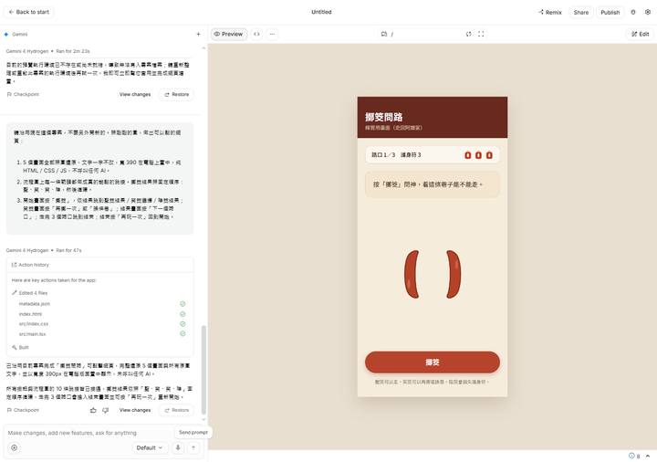
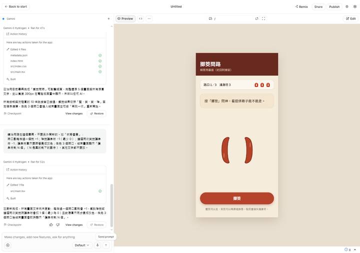
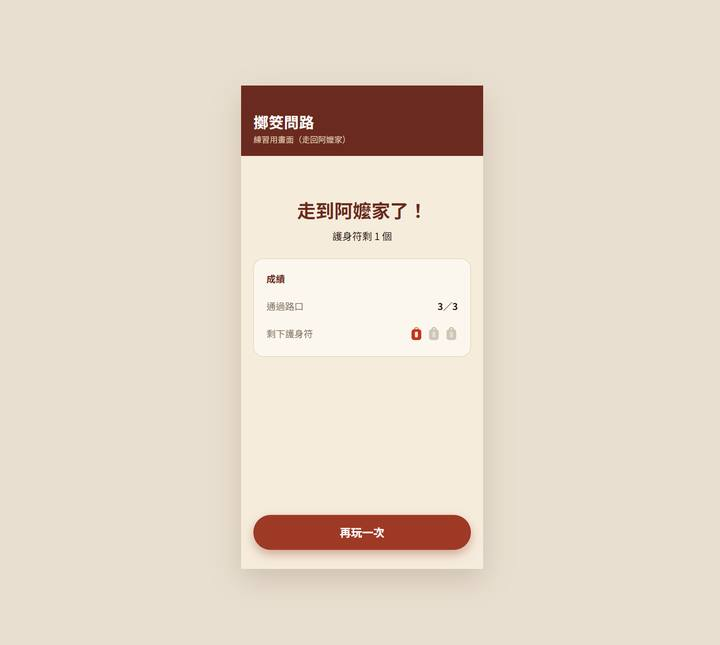
請用 Figma 連接器新建一個 Figma 檔，檔名「文化-爬塔-【你的題名】」。全部畫在同一個 page（page 名稱「畫面」），不要新增其他 page。 我是設計系學生，要設計一個「擲筊問路」小遊戲的手機畫面：玩家走過 3 個路口，每個路口按「擲筊」問神，聖筊就過關；笑筊可以選「再擲一次」或「換條巷」；陰筊會損失護身符。開始有 3 個護身符。 請在這個 page 畫 5 個手機畫面（每個寬 390、高 800，由左到右排好，畫面名稱照下面寫）： 1. 開始：深紅褐色標題列「擲筊問路」＋副標「練習用畫面（走回阿嬤家）」；狀態列「路口 1／3 護身符 3」（右邊放 3 個護身符圖示）；米色圓角訊息框「按「擲筊」問神，看這條巷子能不能走。」；中間兩個紅磚色圓形筊杯；紅色大圓角主要按鈕「擲筊」；底部灰褐色提示「聖筊可以走，笑筊可以再擲或換巷，陰筊會損失護身符。」 2. 笑筊選擇：同樣的標題列與狀態列；訊息框「笑筊：神明沒回答。要再擲一次，還是換條巷？」；兩張並排的選項卡片「再擲一次」「換條巷」（每張卡片有一行小說明：再擲一次＝再問一次；換條巷＝走別條路）。 3. 聖筊結果：訊息框「聖筊：這條巷子平安。」；筊杯一正一反；按鈕「下一個路口」；狀態列「路口 2／3 護身符 3」。 4. 陰筊結果：訊息框「陰筊：這條巷子不能走，護身符 −1。」；筊杯兩個都蓋住；護身符圖示少一個變灰；按鈕「下一個路口」；狀態列「路口 2／3 護身符 2」。 5. 結束：標題列同上；大字「走到阿嬤家了！」；「護身符剩 2 個」；成績卡片；按鈕「再玩一次」。 文字請一字不改照我寫的，字型用系統內建黑體；顏色：標題列深紅褐、背景米色、按鈕紅磚色、提示文字灰褐色。 畫完後，在同一個 page、畫面正下方，再畫一張「畫面流程圖」：用方框代表上面 5 個畫面，用箭頭連起來，每條箭頭上標「點哪裡」（例如：開始 →〔點擲筊，擲到笑筊〕→ 笑筊選擇）。 最後請回覆新檔的 Figma 連結，並用條列講一下每個畫面用了哪些元件（標題列、狀態列、主要按鈕、選項卡片、訊息框、結果畫面）。 另外，在畫面框外新增一個文字框，標題叫「Claude 協作日誌」。之後我每請你改一次：改完在畫面框外的『Claude 協作日誌』文字框最下面追加一行：日期時間｜我請你做的事｜你改了什麼。
請先不要寫程式。我附了 5 個手機畫面和 1 張畫面流程圖，是「擲筊問路」小遊戲。 請列出：每個畫面的名稱、畫面上的按鈕、按下去會跳到哪個畫面。圖上的文字請一字不改抄出來。 最後用一句話告訴我：你看懂了幾個畫面、幾個按鈕、幾條跳接。 （等它復述完，你對照 Figma 說「對」之後，再貼下面這一段） 請沿用現在這個專案，不要另外開新的。照剛剛的圖，做出可以點的網頁： 1. 5 個畫面全部照圖還原，文字一字不改，寬 390 在電腦上置中，純 HTML／CSS／JS，不呼叫任何 AI。 2. 流程圖上每一條箭頭都做成真的能點的跳接。擲筊結果照固定順序：聖、笑、笑、陰，然後循環。 3. 開始畫面按「擲筊」，依結果跳到聖筊結果／笑筊選擇／陰筊結果；笑筊畫面按「再擲一次」或「換條巷」；結果畫面按「下一個路口」；走完 3 個路口跳到結束；結束按「再玩一次」回到開始。
請沿用現在這個專案，不要另外開新的。加「狀態會變」： 路口數每走過一個就 +1；陰筊護身符 −1（最少 0）；連續兩次笑筊護身符 −1；護身符圖示要跟著變成灰色；走完 3 個路口，結束畫面顯示「護身符剩 N 個」（N 是真的剩下的數字）。其他文字都不要改。
請沿用現在這個專案，不要另外開新的。我再附上 5 個手機畫面圖，請把介面整理成跟圖一樣： 1. 標題列：高 114、深紅褐色 #6b2a1f，標題「擲筊問路」字級 24、副標字級 13； 2. 狀態列：白底圓角 12、字級 15；訊息框：淡米色圓角 16、字級 16； 3. 主要按鈕「擲筊」「下一個路口」「再玩一次」：紅磚色 #b5452f、圓角 28、高 56、字級 18； 4. 按鈕要有按下狀態（按住時顏色變深、稍微縮小），擲筊要有 hover 時的變化。 所有文字一字不改，玩法不要動。
請沿用現在這個專案，不要另外開新的。加「按鈕按下與失敗重試」： 按「擲筊」後，筊杯轉動約 1 秒，這段時間按鈕變灰、字改成「擲筊中…」不能再按。 再加一個失敗情況：網址後面有 #fail 時，第一次擲筊會顯示紅色提示「沒擲出去，請再按一次」，再按一次就成功。其他文字都不要改。
請沿用現在這個專案，不要另外開新的。現在按下「擲筊」之後畫面沒有變化（還停在開始畫面）。請修好： 按「擲筊」後，筊杯轉動約 1 秒（按鈕變灰、字是「擲筊中…」），然後依固定順序（聖筊、笑筊、笑筊、陰筊，循環）跳到對應的結果畫面；網址有 #fail 時，第一次擲筊顯示紅色提示「沒擲出去，請再按一次」，再按一次就成功。其他文字與玩法都不要改。
打開範例 Figma 打開範例 AI StudioBuka contoh Figma Buka contoh AI Studio
老師實測：「市場不能貼著廟。」那句沒有觸發，沒比對到；放不下的原因只實測了「這格已經有板塊了。」一種；改 3 的左右抖動和紅褐色字老師量不到，沒有驗證。Hasil uji coba dosen: Kalimat "市場不能貼著廟。" (Pasar tidak boleh menempel dengan kuil.) tidak terpicu dan tidak cocok; alasan tidak bisa diletakkan hanya teruji satu jenis yaitu "這格已經有板塊了。" (Kotak ini sudah ada ubinnya.); goyangan ke kiri-kanan serta teks warna merah kecokelatan pada revisi 3 tidak terukur oleh dosen, jadi belum diverifikasi.
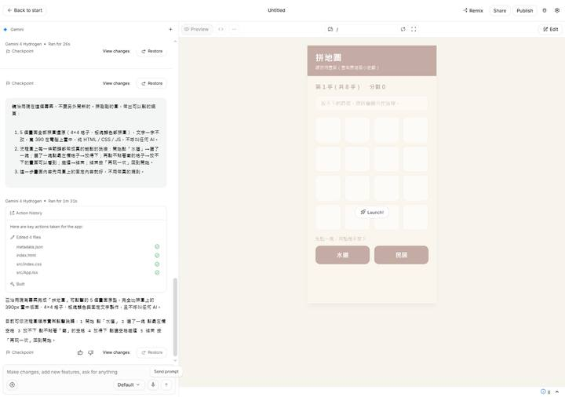
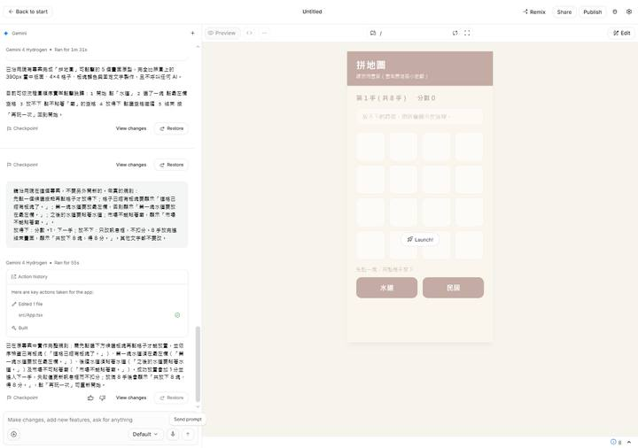
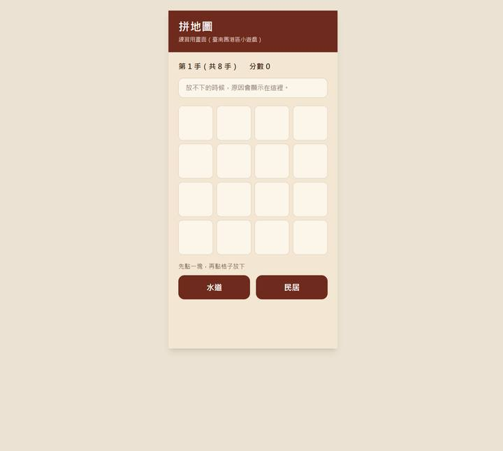
請用 Figma 連接器新建一個 Figma 檔，檔名「文化-拼接-【你的題名】」。全部畫在同一個 page（page 名稱「畫面」），不要新增其他 page。 我是設計系學生，要設計一個「拼地圖」小遊戲的手機畫面：4×4 的格子，一共 8 手，每一手有兩塊候選板塊（水道、民居、市場、廟），我先點一塊、再點一個格子放下；有些地方放不下（例如第一塊水道要放在最左欄、市場不能貼著廟），放不下時要在畫面上用一句話告訴我為什麼。 請在這個 page 畫 5 個手機畫面（每個寬 390、高 800，由左到右排好，畫面名稱照下面寫）： 1. 開始：深紅褐色標題列「拼地圖」＋副標「練習用畫面（臺南舊港區小遊戲）」；狀態列「第 1 手（共 8 手） 分數 0」；淡米色圓角訊息框「放不下的時候，原因會顯示在這裡。」；4×4 共 16 個淡米色圓角空格（每格約 80）；候選區說明「先點一塊，再點格子放下」；兩顆深紅褐色圓角候選按鈕「水道」「民居」。 2. 選了一塊：同畫面，「水道」按鈕有白色外框（選中狀態），其他不變。 3. 放不下：格子上最左欄已有一塊水道，又想把市場放到廟旁邊；訊息框用醒目的紅褐色字「市場不能貼著廟。」；格子上有 4 塊不同顏色的板塊（水道藍、民居黃、市場橘、廟紅，每塊寫名稱）；狀態列「第 4 手（共 8 手） 分數 3」；候選按鈕「廟」「市場」。 4. 放得下：同一張地圖多放一塊，分數變 4，訊息框回到「放不下的時候，原因會顯示在這裡。」，狀態列「第 5 手（共 8 手） 分數 4」。 5. 結束：狀態列「結束！ 分數 8」；訊息框「共放下 8 塊，得 8 分。」；4×4 格子幾乎全部有板塊；按鈕「再玩一次」。 文字請一字不改照我寫的，字型用系統內建黑體；顏色：標題列深紅褐、背景米色、格子淡米色。 畫完後，在同一個 page、畫面正下方，再畫一張「畫面流程圖」：用方框代表上面 5 個畫面，用箭頭連起來，每條箭頭上標「點哪裡」。 最後請回覆新檔的 Figma 連結，並用條列講一下每個畫面用了哪些元件（標題列、狀態列、格子、候選按鈕、訊息框、結果畫面）。 另外，在畫面框外新增一個文字框，標題叫「Claude 協作日誌」。之後我每請你改一次：改完在畫面框外的『Claude 協作日誌』文字框最下面追加一行：日期時間｜我請你做的事｜你改了什麼。
請先不要寫程式。我附了 5 個手機畫面和 1 張畫面流程圖，是「拼地圖」小遊戲。 請列出：每個畫面的名稱、畫面上的按鈕與格子、按下去會跳到哪個畫面。圖上的文字請一字不改抄出來。 最後用一句話告訴我：你看懂了幾個畫面、幾個按鈕、幾條跳接。 （等它復述完，你對照 Figma 說「對」之後，再貼下面這一段） 請沿用現在這個專案，不要另外開新的。照剛剛的圖，做出可以點的網頁： 1. 5 個畫面全部照圖還原（4×4 格子、板塊顏色都照圖），文字一字不改，寬 390 在電腦上置中，純 HTML／CSS／JS，不呼叫任何 AI。 2. 流程圖上每一條箭頭都做成真的能點的跳接：開始點「水道」→選了一塊；選了一塊點最左欄格子→放得下；再點不貼著廟的格子→放不下的畫面可以看到；繼續→結束；結束按「再玩一次」回到開始。 3. 這一步畫面內容先用圖上的固定內容就好，不用做真的規則。
請沿用現在這個專案，不要另外開新的。做真的規則： 先點一個候選按鈕再點格子才放得下；格子已經有板塊要顯示「這格已經有板塊了。」；第一塊水道要放最左欄，否則顯示「第一塊水道要放在最左欄。」；之後的水道要貼著水道；市場不能貼著廟，顯示「市場不能貼著廟。」。 放得下：分數 +1、下一手；放不下：只改訊息框，不扣分。8 手放完進結束畫面，顯示「共放下 8 塊，得 8 分。」。其他文字都不要改。
請沿用現在這個專案，不要另外開新的。我再附上 5 個手機畫面圖，請把介面整理成跟圖一樣： 1. 標題列：高 96、深紅褐色 #6e2a1c，標題「拼地圖」字級 26、副標字級 13； 2. 狀態列字級 17；訊息框：淡米色 #fbf5ea、圓角 12、字級 15； 3. 4×4 格子：每格 80×80、淡米色 #fbf5ea、圓角 10； 4. 候選按鈕：深紅褐色 #6e2a1c、高 56、圓角 14、字級 18，按住時顏色變深、稍微縮小；選中時有白色外框。 所有文字一字不改，規則不要動。
請沿用現在這個專案，不要另外開新的。照樣板原規則再加一條新規則： 「廟」不能放在最左欄，放不下時訊息框顯示「廟要離水道遠一點，不能放最左欄。」。 放不下的那一格左右抖動一下，訊息框文字變成紅褐色，2 秒後恢復，選取狀態保留，讓我可以直接點別格再試。其他規則與文字都不要改。
打開範例 Figma 打開範例 AI StudioBuka contoh Figma Buka contoh AI Studio
老師實測：有 2 句畫面文字是隨遊戲變動的數字，用字沒有差異；改 2 的狀態列字級量到 16px、Figma 是 17px，老師不確定量到的是不是外層；撞到路障後體力不會回到 70，因為指令沒有這樣要求。Hasil uji coba dosen: Ada 2 kalimat teks layar yang angkanya berubah mengikuti permainan, pilihan katanya tidak ada perbedaan; ukuran teks bilah status pada revisi 2 terukur 16px, sedangkan di Figma 17px, dosen tidak yakin apakah yang terukur adalah lapisan luar; setelah menabrak rintangan, stamina tidak kembali ke 70 karena perintah prompt memang tidak meminta demikian.
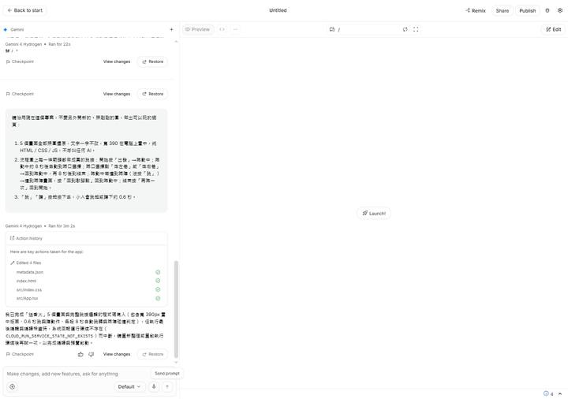
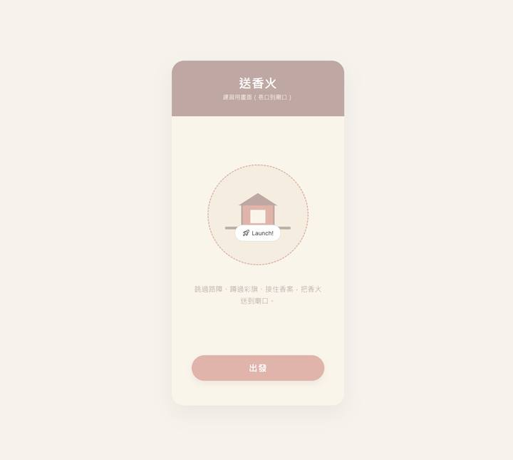
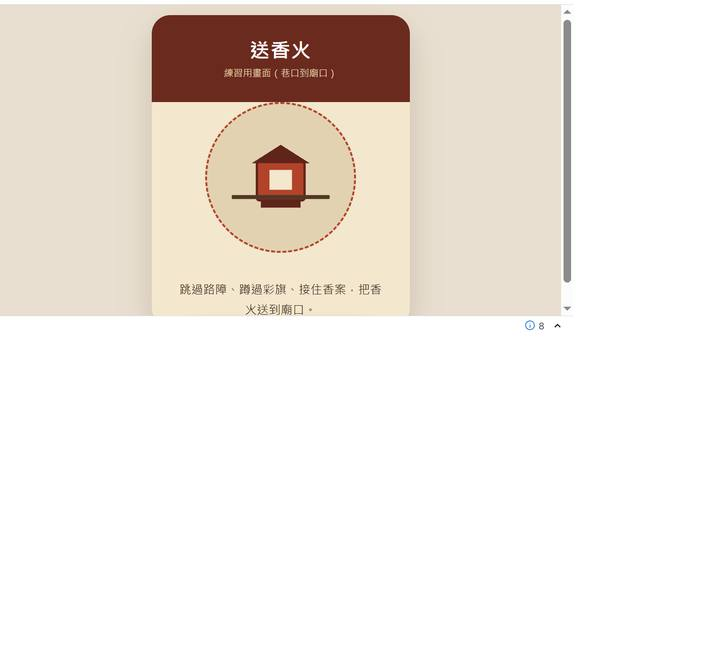
請用 Figma 連接器新建一個 Figma 檔，檔名「文化-跑酷-【你的題名】」。全部畫在同一個 page（page 名稱「畫面」），不要新增其他 page。 我是設計系學生，要設計一個「送香火」小遊戲的手機畫面（橫向會跑的那種跑酷遊戲，但我只畫靜態畫面）：玩家扮演抬著香火的轎班，沿著臺南老街往廟口跑；遇到路障要「跳」、遇到低掛的彩旗要「蹲」、路邊有香案要「接」；奉茶可以補體力。體力歸零，或撞到路障，就要回到上一個歇腳點重來。 請在這個 page 畫 5 個手機畫面（每個寬 390、高 800，由左到右排好，畫面名稱照下面寫）： 1. 開始：深紅褐色標題列「送香火」＋副標「練習用畫面（巷口到廟口）」；中間一個圓形插畫位置（轎子）；說明文字「跳過路障、蹲過彩旗、接住香案，把香火送到廟口。」；紅色大圓角主要按鈕「出發」。 2. 跑動中：上方狀態列「體力 80 香案 1／3 第 1 段」（體力用一條進度條）；中間是跑道場景：左邊一個小人（轎班），前方有一個路障（▲）、上方有一條彩旗，地面一條線；下方左右兩顆大圓形操作按鈕「跳」「蹲」。 3. 路口選擇：同狀態列；跑道場景暫停（變淡）；中間跳出兩張選項卡片「走左巷（有奉茶，較遠）」「走右巷（有香案，較近）」；下方提示「選一條，路上的東西會不一樣。」 4. 撞到路障：狀態列體力變 45；畫面中央紅色提示「路障擋住了，神轎停下來了。」；按鈕「回到歇腳點」。 5. 結束：標題列同上；大字「香火送到廟口了！」；成績卡片三行（接到香案 3 個、剩下體力 62、撞到路障 1 次）；按鈕「再跑一次」。 文字請一字不改照我寫的，字型用系統內建黑體；顏色：標題列深紅褐、背景米色、按鈕紅磚色、跑道灰褐色。 畫完後，在同一個 page、畫面正下方，再畫一張「畫面流程圖」：用方框代表上面 5 個畫面，用箭頭連起來，每條箭頭上標「點哪裡」。 最後請回覆新檔的 Figma 連結，並用條列講一下每個畫面用了哪些元件（標題列、狀態列、進度條、操作按鈕、選項卡片、結果畫面）。 另外，在畫面框外新增一個文字框，標題叫「Claude 協作日誌」。之後我每請你改一次：改完在畫面框外的『Claude 協作日誌』文字框最下面追加一行：日期時間｜我請你做的事｜你改了什麼。
請先不要寫程式。我附了 5 個手機畫面和 1 張畫面流程圖，是「送香火」跑酷小遊戲。 請列出：每個畫面的名稱、畫面上的按鈕與提示、按下去或發生事情時會跳到哪個畫面。圖上的文字請一字不改抄出來。 最後用一句話告訴我：你看懂了幾個畫面、幾個按鈕、幾條跳接。 （等它復述完，你對照 Figma 說「對」之後，再貼下面這一段） 請沿用現在這個專案，不要另外開新的。照剛剛的圖，做出可以玩的網頁： 1. 5 個畫面全部照圖還原，文字一字不改，寬 390 在電腦上置中，純 HTML／CSS／JS，不呼叫任何 AI。 2. 流程圖上每一條箭頭都做成真的跳接：開始按「出發」→跑動中；跑動中約 8 秒後自動到路口選擇；路口選擇點「走左巷」或「走右巷」→回到跑動中，再 8 秒後到結束；跑動中若撞到路障（沒按「跳」）→撞到路障畫面，按「回到歇腳點」回到跑動中；結束按「再跑一次」回到開始。 3. 「跳」「蹲」按鈕按下去，小人會跳起或蹲下約 0.6 秒。
請沿用現在這個專案，不要另外開新的。讓遊戲能從「出發」玩到結束，規則固定如下： 1. 按「出發」進跑動中。第 3、6、9 秒各出現一個障礙：路障、彩旗、路障。障礙出現時，畫面上方顯示提示「前方路障：請按跳」或「前方彩旗：請按蹲」，玩家 1.5 秒內按對的鈕才通過（路障按「跳」、彩旗按「蹲」）。 2. 通過一個障礙，「香案」數字 +1；按錯或沒按就撞到，進「撞到路障」畫面，體力 −35，按「回到歇腳點」回到跑動中，從頭再跑，香案數字保留。 3. 體力條每秒慢慢減少；第 12 秒進「路口選擇」，選走左巷或走右巷後，再跑 6 秒進結束畫面。 4. 結束畫面的三行成績（接到香案、剩下體力、撞到路障）要是真的數字；按「再跑一次」全部重置回開始畫面。 其他文字都不要改。
請沿用現在這個專案，不要另外開新的。我再附上 5 個手機畫面圖，請把介面整理成跟圖一樣： 1. 開始與結束畫面的標題列：高 131、深紅褐色 #6b2a1e，標題「送香火」字級 30、副標字級 14；說明文字字級 18； 2. 主要按鈕「出發」「再跑一次」：寬 300、高 60、圓角 30、紅磚色 #b5462f、字級 22，按住時顏色變深、稍微縮小； 3. 跑動中的狀態列：高 110、米色 #ead9b8、字級 17，文字格式照圖：「體力 80 香案 1／3 第 1 段」（斜線是全形「／」，字之間是全形空格）； 4. 結束畫面的成績卡片：圓角 16、字級 19；大字「香火送到廟口了！」字級 32。 所有文字一字不改，玩法不要動。
請沿用現在這個專案，不要另外開新的。自選功能：修正香案數與加上奉茶。 1. 「香案」數字最多只算到 3，顯示成「香案 3／3」，不要出現「4／3」；結束畫面「接到香案 N 個」也最多 3 個。 2. 路口選擇如果選「走左巷（有奉茶，較遠）」，體力 +25（最多 100）；選「走右巷（有香案，較近）」，香案 +1（最多 3）。 其他文字與玩法都不要改。
打開範例 Figma 打開範例 AI StudioBuka contoh Figma Buka contoh AI Studio
不做也可以，三步和要交的東西都不變。做出一張交接卡，一起貼進 AI Studio，它復述得更準，你對照 Figma 檢查文字也更容易。Tidak dikerjakan juga tidak apa-apa, tiga langkah dan tugas yang harus dikumpulkan tetap sama. Jika kamu membuat satu kartu serah terima lalu menempelkannya bersama ke AI Studio, hasil pengulangannya akan lebih akurat, dan kamu pun lebih mudah mencocokkan teksnya dengan Figma.
請在這個 Figma 檔同一個 page 加一張「交接卡」畫框：放每個畫面的縮圖（每個至少 200 寬、字要看得清楚）並用箭頭標出按什麼跳到哪；旁邊列出每個畫面上的文字（照 Figma 逐字抄，連符號也一樣）、主要顏色與按鈕尺寸；最下面寫改 1、改 2、改 3 的驗收題。請用繁體中文回覆。
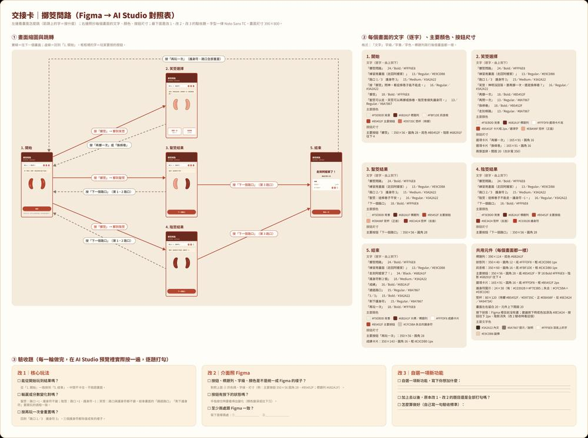
老師實測：AI Studio 復述了 33 句畫面文字，其中 32 句和 Figma 逐字相同，1 句的減號被換成半形的「-」。交接卡上的縮圖很小，字看不清楚，AI 讀的是旁邊規格區的文字，不是縮圖。Claude 在按鈕按下去的樣子那一題自己補了一句建議，不是原稿的內容。老師只測了 5 個畫面，畫面更多時版面塞不塞得下還沒測。Uji coba dosen: AI Studio mengulang 33 kalimat teks layar, 32 di antaranya sama persis kata demi kata dengan Figma, dan 1 kalimat tanda minusnya diganti menjadi tanda hubung setengah lebar "-". Gambar mini di kartu serah terima sangat kecil dan tulisannya tidak terbaca jelas; AI membaca teks di area spesifikasi sebelahnya, bukan dari gambar mini. Claude menambahkan satu kalimat saran sendiri pada bagian tampilan tombol saat ditekan, yang mana bukan bagian dari draf asli. Dosen baru menguji 5 layar saja, belum menguji apakah tata letaknya masih muat jika layarnya lebih banyak.
點右下角的「問AI助教」，從「你的畫面裡最好玩的那一刻是什麼？」聊起，至少聊 3 輪（你說一次、助教回一次＝1 輪）。聊夠了，助教會把你的話整理成一句，按「對，就這樣」。討論佔這份作業的一半；助教不打分數，老師會讀。Klik 「問AI助教」(Tanya asisten pengajar AI) di pojok kanan bawah, dan mulailah mengobrol dari pertanyaan 「你的畫面裡最好玩的那一刻是什麼？」(Momen paling seru apa yang ada di layarmu?). Mengobrollah paling sedikit 3 putaran (kamu bicara sekali, asisten pengajar menjawab sekali = 1 putaran). Kalau sudah cukup, asisten pengajar akan merangkum ucapanmu menjadi satu kalimat, lalu klik 「對，就這樣」(Ya, begitu saja). Diskusi ini mencakup setengah dari nilai tugas ini; asisten pengajar tidak memberikan nilai, tetapi dosen akan membacanya.
聊完畫面會出現一張「助教結果卡」（上面有完成碼，不會顯示你的編號），把它截圖，連同兩個連結一起交。Setelah selesai mengobrol, layar akan menampilkan sebuah "kartu hasil asisten pengajar" (di atasnya ada kode selesai, nomor kamu tidak akan ditampilkan). Ambil tangkapan layar kartu tersebut, lalu kumpulkan bersama dua tautan lainnya.
交件：Figma 連結、AI Studio 連結、一張「助教結果卡」截圖。Pengumpulan tugas: Tautan Figma, tautan AI Studio, dan satu tangkapan layar "kartu hasil asisten pengajar".
不想做可以直接略過，上面的主線一樣能完成。Kalau tidak ingin mengerjakannya, kamu boleh langsung lewati, tugas utama di atas tetap bisa diselesaikan.
選做 A：樣板規則檢查（壞資料三種）。把樣板的整份 HTML（在電腦的 Chrome 打開樣板，按右鍵「檢視網頁原始碼」，Ctrl＋A、Ctrl＋C）連同你的畫面一起交給 AI Studio 重做外觀，再檢查它有沒有偷偷改掉規則：①玩一輪，新專案能走完嗎？②載入原樣板的 JSON（把樣板網址最後的 .html 換成 .json），再「取出目前資料」，看資料有沒有少。③故意把 JSON 改壞三種（把某個道具的 "clue" 改成 "不存在"；把某個組合的 "gives" 改成 "不存在"；把某題 solveWhen 裡的問題名稱改成 "不存在"），一次一種，先在原樣板、再在你的新專案「載入我的版本」，看會不會被擋。把結果寫成：原樣板擋了幾種（0–3）／新專案擋了幾種（0–3）／有差異的寫在哪裡。有差異不是失敗，那就是要學到的。不是解謎樣板的同學，改成你的樣板 JSON 裡「指到不存在的東西」的三處；不確定就問老師。Tugas Pilihan A: Memeriksa aturan template (tiga jenis data rusak). Berikan seluruh kode HTML template (buka template di Chrome komputer, klik kanan «檢視網頁原始碼» (Lihat sumber halaman), Ctrl＋A, Ctrl＋C) bersama dengan layar kamu ke AI Studio untuk merombak tampilannya, lalu periksa apakah AI diam-diam mengubah aturannya: ① Mainkan satu putaran, apakah proyek baru bisa diselesaikan sampai akhir? ② Muat file JSON dari template asli (ganti akhiran .html pada URL template menjadi .json), lalu tekan «取出目前資料» (Ambil data saat ini), lihat apakah ada data yang hilang. ③ Sengaja buat 3 jenis data rusak pada JSON (ubah "clue" pada suatu barang menjadi "不存在"; ubah "gives" pada suatu kombinasi menjadi "不存在"; ubah nama pertanyaan di dalam solveWhen pada suatu soal menjadi "不存在"), uji satu per satu jenis kerusakan, pertama di template asli lalu di proyek baru kamu lewat «載入我的版本» (Muat versi saya), lihat apakah sistem menolaknya. Tuliskan hasilnya sebagai: berapa jenis yang ditolak template asli (0–3) / berapa jenis yang ditolak proyek baru (0–3) / tuliskan letak perbedaannya jika ada. Adanya perbedaan bukan berarti gagal, justru itulah yang ingin kita pelajari. Mahasiswa yang tidak memakai template teka-teki, ubah 3 bagian pada JSON template kamu yang "mengarah ke hal yang tidak ada"; jika ragu, tanyakan kepada dosen.
樣板：故事・走讀・解謎・經營・卡牌・節奏・潛行・談判・塔防・爬塔・拼接・跑酷Templat: Cerita・Tur jelajah・Teka-teki・Manajemen・Kartu・Ritme・Menyelinap・Negosiasi・Tower defense・Panjat menara・Ubin・Lari rintangan
選做 B：看看 AI 做出來的專案裡面長什麼樣子。在你的 AI Studio 專案按上方的「Code」，左邊會有檔案清單。找到存放資料的那個檔（例如 puzzleData.ts），對照你自己的 JSON：同一個人物名字、同一句台詞是不是都在？只要看，不用改、不用安裝任何東西。Tugas Pilihan B: Melihat isi di dalam proyek yang dibuat oleh AI. Pada proyek AI Studio kamu, tekan "Code" di bagian atas, di sebelah kiri akan muncul daftar file. Temukan file tempat penyimpanan data (misalnya puzzleData.ts), lalu cocokkan dengan file JSON milikmu: apakah nama tokoh yang sama dan dialog yang sama semuanya ada di sana? Cukup dilihat saja, tidak perlu diubah dan tidak perlu memasang aplikasi apa pun.